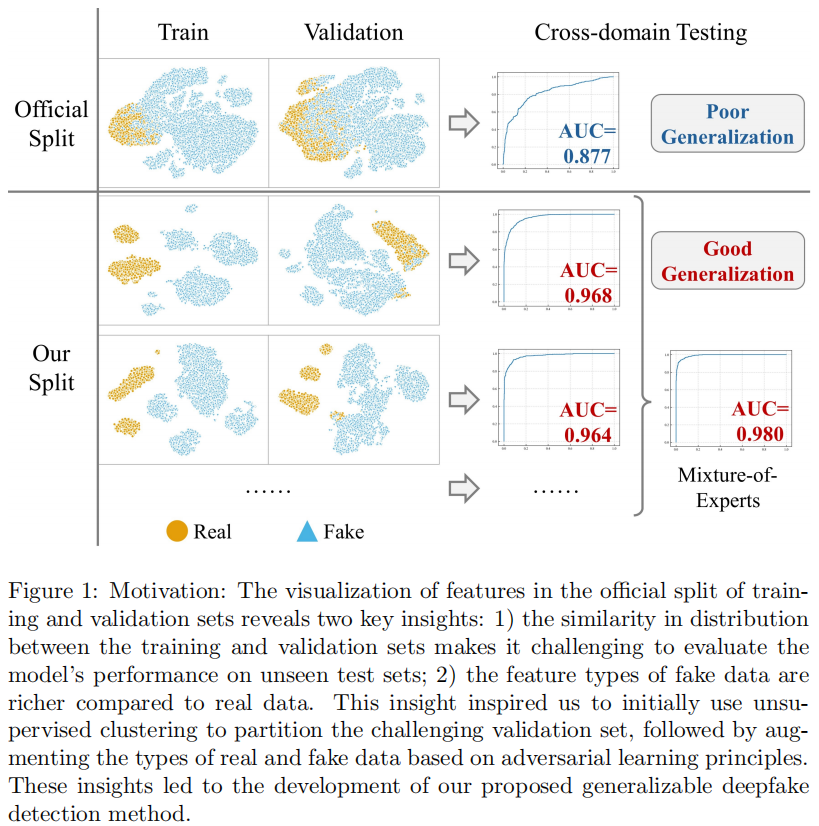
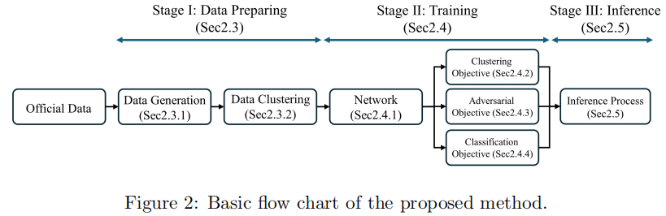
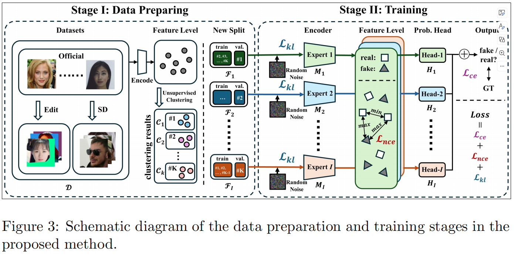
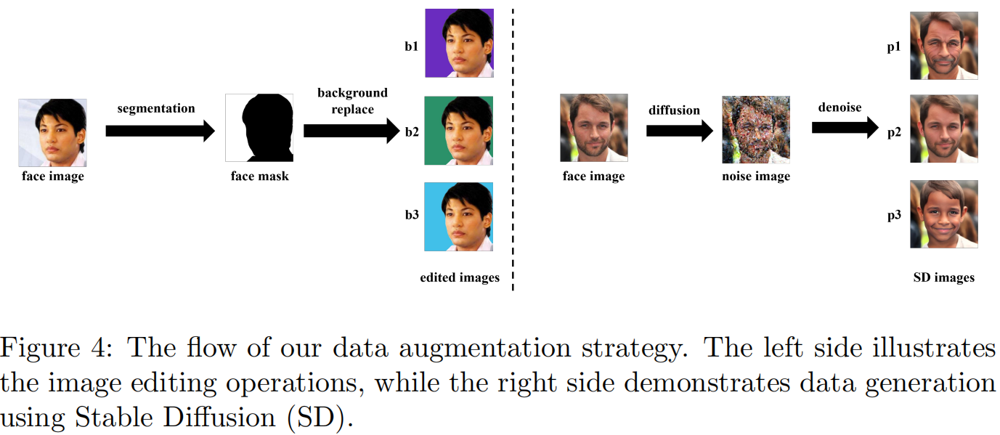
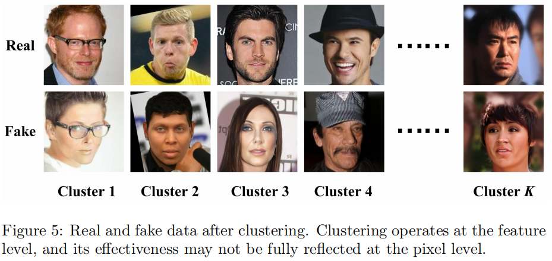
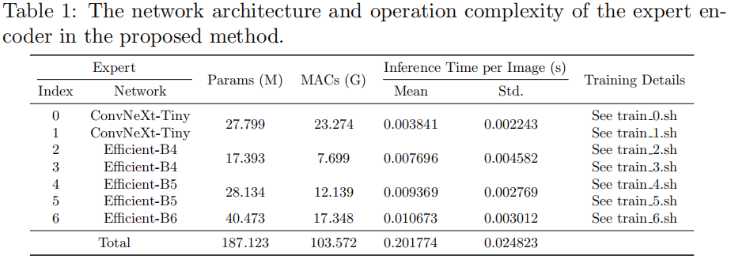
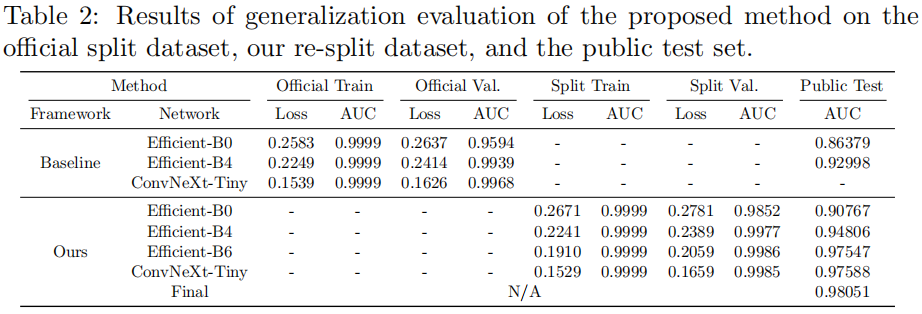
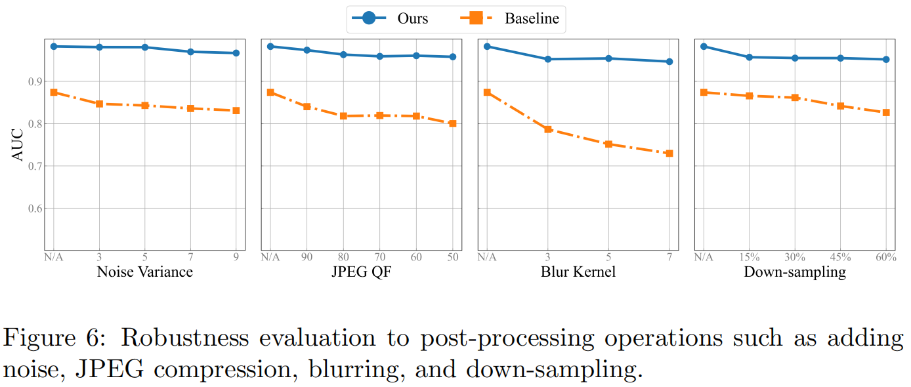
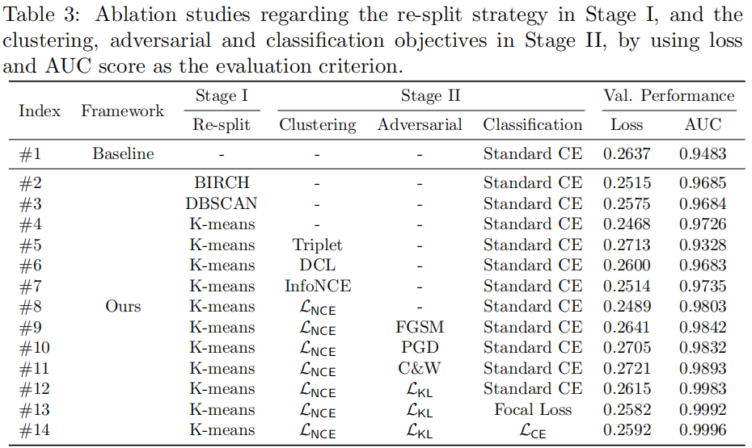
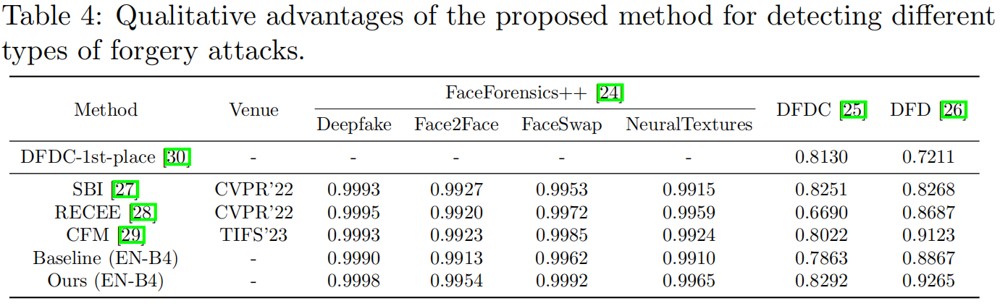

<!DOCTYPE html><html lang="zh-CN" data-theme="light"><head><meta charset="UTF-8"><meta http-equiv="X-UA-Compatible" content="IE=edge"><meta name="viewport" content="width=device-width, initial-scale=1.0,viewport-fit=cover"><title>Towards Generalizable Deepfake Detection via Clustered and Adversarial Forgery Learning | zhaozw后院</title><meta name="author" content="Zhaozw"><meta name="copyright" content="Zhaozw"><meta name="format-detection" content="telephone=no"><meta name="theme-color" content="#ffffff"><meta name="description" content="Towards Generalizable Deepfake Detection via Clustered and Adversarial
 Forgery Learning
 
 
 Yiming Chen, Haiwei Wu, Fengpeng Li, Kemou Li,
 
 
 Zheng Li, Kahim Wong, Xiangyu Chen, Binbin Song,">
<meta property="og:type" content="article">
<meta property="og:title" content="Towards Generalizable Deepfake Detection via Clustered and Adversarial Forgery Learning">
<meta property="og:url" content="https://zhaozw-szu.github.io/KaggleNet/index.html">
<meta property="og:site_name" content="zhaozw后院">
<meta property="og:description" content="Towards Generalizable Deepfake Detection via Clustered and Adversarial
 Forgery Learning
 
 
 Yiming Chen, Haiwei Wu, Fengpeng Li, Kemou Li,
 
 
 Zheng Li, Kahim Wong, Xiangyu Chen, Binbin Song,">
<meta property="og:locale" content="zh_CN">
<meta property="og:image" content="https://zhaozw-szu.github.io/postimages/KaggleNet/image-20240903142646600.png">
<meta property="article:published_time" content="2024-09-09T07:02:57.000Z">
<meta property="article:modified_time" content="2025-01-07T02:11:35.599Z">
<meta property="article:author" content="Zhaozw">
<meta name="twitter:card" content="summary">
<meta name="twitter:image" content="https://zhaozw-szu.github.io/postimages/KaggleNet/image-20240903142646600.png"><link rel="shortcut icon" href="/img/favicon.png"><link rel="canonical" href="https://zhaozw-szu.github.io/KaggleNet/index.html"><link rel="preconnect" href="//cdn.jsdelivr.net"/><link rel="preconnect" href="//busuanzi.ibruce.info"/><link rel="stylesheet" href="/css/index.css?v=4.13.0"><link rel="stylesheet" href="https://cdn.jsdelivr.net/npm/@fortawesome/fontawesome-free@6.5.1/css/all.min.css"><link rel="stylesheet" href="https://cdn.jsdelivr.net/npm/@fancyapps/ui@5.0.33/dist/fancybox/fancybox.min.css" media="print" onload="this.media='all'"><script>const GLOBAL_CONFIG = {
  root: '/',
  algolia: undefined,
  localSearch: {"path":"/search.xml","preload":false,"top_n_per_article":1,"unescape":false,"languages":{"hits_empty":"找不到您查询的内容：${query}","hits_stats":"共找到 ${hits} 篇文章"}},
  translate: undefined,
  noticeOutdate: undefined,
  highlight: {"plugin":"highlight.js","highlightCopy":true,"highlightLang":true,"highlightHeightLimit":false},
  copy: {
    success: '复制成功',
    error: '复制错误',
    noSupport: '浏览器不支持'
  },
  relativeDate: {
    homepage: false,
    post: false
  },
  runtime: '',
  dateSuffix: {
    just: '刚刚',
    min: '分钟前',
    hour: '小时前',
    day: '天前',
    month: '个月前'
  },
  copyright: undefined,
  lightbox: 'fancybox',
  Snackbar: undefined,
  infinitegrid: {
    js: 'https://cdn.jsdelivr.net/npm/@egjs/infinitegrid@4.11.1/dist/infinitegrid.min.js',
    buttonText: '加载更多'
  },
  isPhotoFigcaption: false,
  islazyload: false,
  isAnchor: false,
  percent: {
    toc: true,
    rightside: false,
  },
  autoDarkmode: false
}</script><script id="config-diff">var GLOBAL_CONFIG_SITE = {
  title: 'Towards Generalizable Deepfake Detection via Clustered and Adversarial Forgery Learning',
  isPost: true,
  isHome: false,
  isHighlightShrink: false,
  isToc: true,
  postUpdate: '2025-01-07 10:11:35'
}</script><script>(win=>{
      win.saveToLocal = {
        set: (key, value, ttl) => {
          if (ttl === 0) return
          const now = Date.now()
          const expiry = now + ttl * 86400000
          const item = {
            value,
            expiry
          }
          localStorage.setItem(key, JSON.stringify(item))
        },
      
        get: key => {
          const itemStr = localStorage.getItem(key)
      
          if (!itemStr) {
            return undefined
          }
          const item = JSON.parse(itemStr)
          const now = Date.now()
      
          if (now > item.expiry) {
            localStorage.removeItem(key)
            return undefined
          }
          return item.value
        }
      }
    
      win.getScript = (url, attr = {}) => new Promise((resolve, reject) => {
        const script = document.createElement('script')
        script.src = url
        script.async = true
        script.onerror = reject
        script.onload = script.onreadystatechange = function() {
          const loadState = this.readyState
          if (loadState && loadState !== 'loaded' && loadState !== 'complete') return
          script.onload = script.onreadystatechange = null
          resolve()
        }

        Object.keys(attr).forEach(key => {
          script.setAttribute(key, attr[key])
        })

        document.head.appendChild(script)
      })
    
      win.getCSS = (url, id = false) => new Promise((resolve, reject) => {
        const link = document.createElement('link')
        link.rel = 'stylesheet'
        link.href = url
        if (id) link.id = id
        link.onerror = reject
        link.onload = link.onreadystatechange = function() {
          const loadState = this.readyState
          if (loadState && loadState !== 'loaded' && loadState !== 'complete') return
          link.onload = link.onreadystatechange = null
          resolve()
        }
        document.head.appendChild(link)
      })
    
      win.activateDarkMode = () => {
        document.documentElement.setAttribute('data-theme', 'dark')
        if (document.querySelector('meta[name="theme-color"]') !== null) {
          document.querySelector('meta[name="theme-color"]').setAttribute('content', '#0d0d0d')
        }
      }
      win.activateLightMode = () => {
        document.documentElement.setAttribute('data-theme', 'light')
        if (document.querySelector('meta[name="theme-color"]') !== null) {
          document.querySelector('meta[name="theme-color"]').setAttribute('content', '#ffffff')
        }
      }
      const t = saveToLocal.get('theme')
    
        if (t === 'dark') activateDarkMode()
        else if (t === 'light') activateLightMode()
      
      const asideStatus = saveToLocal.get('aside-status')
      if (asideStatus !== undefined) {
        if (asideStatus === 'hide') {
          document.documentElement.classList.add('hide-aside')
        } else {
          document.documentElement.classList.remove('hide-aside')
        }
      }
    
      const detectApple = () => {
        if(/iPad|iPhone|iPod|Macintosh/.test(navigator.userAgent)){
          document.documentElement.classList.add('apple')
        }
      }
      detectApple()
    })(window)</script><link rel="stylesheet" type="text/css" href="/config/css/heoMainColor.css"><link rel="stylesheet" type="text/css" href="/config/css/categoryBar.css"><link rel="stylesheet" type="text/css" href="/config/css/icat.css"><link rel="stylesheet" type="text/css" href="/config/css/emoticon.css"><link rel="stylesheet" href="https://npm.elemecdn.com/swiper@8.4.2/swiper-bundle.min.css" media="print" onload="this.media='all'"><meta name="generator" content="Hexo 7.3.0"></head><body><div id="sidebar"><div id="menu-mask"></div><div id="sidebar-menus"><div class="avatar-img is-center"></div><div class="sidebar-site-data site-data is-center"><a href="/archives/"><div class="headline">文章</div><div class="length-num">114</div></a><a href="/tags/"><div class="headline">标签</div><div class="length-num">18</div></a><a href="/categories/"><div class="headline">分类</div><div class="length-num">22</div></a></div><hr class="custom-hr"/><div class="menus_items"><div class="menus_item"><a class="site-page" href="/"><i class="fa-fw fas fa-home"></i><span> 首页</span></a></div><div class="menus_item"><a class="site-page" href="/archives/"><i class="fa-fw fas fa-archive"></i><span> 时间轴</span></a></div><div class="menus_item"><a class="site-page" href="/tags/"><i class="fa-fw fas fa-tags"></i><span> 标签</span></a></div><div class="menus_item"><a class="site-page" href="/categories/"><i class="fa-fw fas fa-folder-open"></i><span> 分类</span></a></div><div class="menus_item"><a class="site-page group" href="javascript:void(0);"><i class="fa-fw fa fa-chart-simple"></i><span> 文库</span><i class="fas fa-chevron-down"></i></a><ul class="menus_item_child"><li><a class="site-page child" href="/rank/"><i class="fa-fw fas fa-line-chart"></i><span> 期刊等级</span></a></li><li><a class="site-page child" href="/dataset/"><i class="fa-fw fas fa-database"></i><span> 数据集</span></a></li><li><a class="site-page child" href="/code/"><i class="fa-fw fas fa-code"></i><span> 代码</span></a></li></ul></div><div class="menus_item"><a class="site-page" href="/link/"><i class="fa-fw fas fa-link"></i><span> 友链</span></a></div><div class="menus_item"><a class="site-page group" href="javascript:void(0);"><i class="fa-fw fas fa-sun"></i><span> 关于</span><i class="fas fa-chevron-down"></i></a><ul class="menus_item_child"><li><a class="site-page child" href="/about/"><i class="fa-fw fas fa-heart"></i><span> 关于</span></a></li><li><a class="site-page child" href="/essay/"><i class="fa-fw fas fa-music"></i><span> 即刻短文</span></a></li><li><a class="site-page child" href="/game/"><i class="fa-fw fas fa-gamepad"></i><span> 小游戏</span></a></li></ul></div></div></div></div><div class="post" id="body-wrap"><header class="post-bg" id="page-header" style="background-image: url('/postimages/KaggleNet/image-20240903142646600.png')"><nav id="nav"><span id="blog-info"><a href="/" title="zhaozw后院"><span class="site-name">zhaozw后院</span></a></span><div id="menus"><div id="search-button"><a class="site-page social-icon search" href="javascript:void(0);"><i class="fas fa-search fa-fw"></i><span> 搜索</span></a></div><div class="menus_items"><div class="menus_item"><a class="site-page" href="/"><i class="fa-fw fas fa-home"></i><span> 首页</span></a></div><div class="menus_item"><a class="site-page" href="/archives/"><i class="fa-fw fas fa-archive"></i><span> 时间轴</span></a></div><div class="menus_item"><a class="site-page" href="/tags/"><i class="fa-fw fas fa-tags"></i><span> 标签</span></a></div><div class="menus_item"><a class="site-page" href="/categories/"><i class="fa-fw fas fa-folder-open"></i><span> 分类</span></a></div><div class="menus_item"><a class="site-page group" href="javascript:void(0);"><i class="fa-fw fa fa-chart-simple"></i><span> 文库</span><i class="fas fa-chevron-down"></i></a><ul class="menus_item_child"><li><a class="site-page child" href="/rank/"><i class="fa-fw fas fa-line-chart"></i><span> 期刊等级</span></a></li><li><a class="site-page child" href="/dataset/"><i class="fa-fw fas fa-database"></i><span> 数据集</span></a></li><li><a class="site-page child" href="/code/"><i class="fa-fw fas fa-code"></i><span> 代码</span></a></li></ul></div><div class="menus_item"><a class="site-page" href="/link/"><i class="fa-fw fas fa-link"></i><span> 友链</span></a></div><div class="menus_item"><a class="site-page group" href="javascript:void(0);"><i class="fa-fw fas fa-sun"></i><span> 关于</span><i class="fas fa-chevron-down"></i></a><ul class="menus_item_child"><li><a class="site-page child" href="/about/"><i class="fa-fw fas fa-heart"></i><span> 关于</span></a></li><li><a class="site-page child" href="/essay/"><i class="fa-fw fas fa-music"></i><span> 即刻短文</span></a></li><li><a class="site-page child" href="/game/"><i class="fa-fw fas fa-gamepad"></i><span> 小游戏</span></a></li></ul></div></div><div id="toggle-menu"><a class="site-page" href="javascript:void(0);"><i class="fas fa-bars fa-fw"></i></a></div></div></nav><div id="post-info"><h1 class="post-title">Towards Generalizable Deepfake Detection via Clustered and Adversarial Forgery Learning</h1><div id="post-meta"><div class="meta-firstline"><span class="post-meta-date"><i class="far fa-calendar-alt fa-fw post-meta-icon"></i><span class="post-meta-label">创建于</span><time class="post-meta-date-created" datetime="2024-09-09T07:02:57.000Z" title="创建于 2024-09-09 15:02:57">2024-09-09</time><span class="post-meta-separator">|</span><i class="fas fa-history fa-fw post-meta-icon"></i><span class="post-meta-label">更新于</span><time class="post-meta-date-updated" datetime="2025-01-07T02:11:35.599Z" title="更新于 2025-01-07 10:11:35">2025-01-07</time></span></div><div class="meta-secondline"><span class="post-meta-separator">|</span><span class="post-meta-pv-cv" id="" data-flag-title="Towards Generalizable Deepfake Detection via Clustered and Adversarial Forgery Learning"><i class="far fa-eye fa-fw post-meta-icon"></i><span class="post-meta-label">阅读量:</span><span id="busuanzi_value_page_pv"><i class="fa-solid fa-spinner fa-spin"></i></span></span></div></div></div></header><main class="layout" id="content-inner"><div id="post"><article class="post-content" id="article-container"><center>
Towards Generalizable Deepfake Detection via Clustered and Adversarial
Forgery Learning
</center>
<center>
Yiming Chen, Haiwei Wu, Fengpeng Li, Kemou Li,
</center>
<center>
Zheng Li, Kahim Wong, Xiangyu Chen, Binbin Song,
</center>
<center>
Shuning Xu, Jun Liu, $ Jiantao Zhou ^ * $
</center>
<center>
September 2, 2024
</center>
<h1 id="团队详细信息">1 团队详细信息</h1>
<p>团队名称：JTGroup<br/>组长：mortonchen（yimingchen98@gmail.com）<br/>团队成员人数（按字母顺序排列）：</p>
<ul>
<li>chxy95 (chxy95@gmail.com)</li>
<li>fengpengli (fengpeng.li@connect.umac.mo)</li>
<li>highwayw (823215616@qq.com)</li>
<li>kahimwong (jesonwong47@gmail.com)</li>
<li>kemoulee (kemoulee@gmail.com)</li>
<li>namecantbenull (doublebin111@gmail.com)</li>
<li>rebeccaee (rebeccaxu0418@gmail.com)</li>
<li>umlizheng (umlizheng@gmail.com)</li>
<li>yiyayoo (junlwind@163.com)</li>
</ul>
<p>隶属关系：澳门大学智能城市物联网国家重点实验室1<br/>团队主管：教授。Jiantao
Zhou2<br/>∗通讯作者<br/>1https://skliotsc.um.edu.mo/
<br/>2https://www.fst.um.edu.mo/people/jtzhou/</p>
<h1 id="解决方案详细信息35">2解决方案详细信息（35%）</h1>
<p>​  本节首先介绍了解决方案设计背后的动机，然后概述了基本的工作流和其中每个阶段的细节。</p>
<h2 id="动机">2.1动机</h2>
<p>​  在获得官方的训练和验证数据后，我们发现即使是简单的小模型（如Efficient-b0[1]）也可以毫不费力地拟合训练集，并在验证集上实现显著的检测性能。这这表明训练集和验证集是同分布的，并且由相当同质的特征类型组成。虽然这种过拟合问题使小模型能够表现良好，但它不利于在实际场景中检测未知数据。在图1给出了一个说明性的例子，它通过t-SNE可视化了训练集和验证集的特征分布：</p>
<figure>

<figcaption aria-hidden="true">image-20240902200824430</figcaption>
</figure>
<p>​  图1：动机：训练集和验证集的官方分割中的特征可视化揭示了两个关键的见解：
1)训练集和验证集之间分布的相似性使得评估模型在看不见的测试集上的性能具有挑战性；2)假数据的特征类型比真实数据更丰富。这一见解启发了我们最初使用无监督聚类来划分具有挑战性的验证集，然后基于对抗性学习原则增加真实和假数据的类型。这些见解促进了我们提出的泛化性的深度伪造检测方法。<br/>​  结果表明，在该数据分割方案下训练的模型在未知测试集上只能达到0.877的个AUC。<br/>​  基于这些观察结果，我们建议在训练集上进行特征级别（这在后门和噪声标签研究[3,4]中常用）的无监督聚类，然后重新分割训练集和验证集，以包括不同类型的伪造或真实数据。该方法旨在迫使模型更好地适应检测未知类型。此外，虽然深度伪造检测是一项分类任务，但我们在训练过程中在特征和对抗水平上引入了额外的优化目标（受[5]启发），以加强从不同角度对伪造的广义和鲁棒表示的学习。如图1的下部所示，训练集和验证集的重新聚类和重新分割在特征分布上表现出显著差异，使引导模型在未知测试集上的AUC为0.96。此外，通过使用专家混合策略来综合来自不同数据分割场景的知识，我们在未知测试集上实现了最大AUC为0.98。<br/>（[5]：<a
href="https://zhaozw-szu.github.io/Robust-Camera-Model-Identification-Over-Online-Social-Network-Shared-Images-via-Multi-Scenario-Learning/">Robust_Camera_Model_Identification_Over_Online_Social_Network_Shared_Images_via_Multi-Scenario_Learning
| zhaozw后院
(zhaozw-szu.github.io)</a>）<br/>​  下一节将深入介绍所提出的方法。</p>
<h2 id="提出的方法概述">2.2提出的方法概述</h2>
<p>​  该方法可分为三个阶段：
1)数据准备、2)训练和3)推理，其基本过程如图2所示。</p>
<figure>

<figcaption aria-hidden="true">image-20240903113352343</figcaption>
</figure>
<p>​  在阶段I的第2.3节最初增加和丰富了所提供的官方数据，以提供更多样化的数据分布。随后，采用无监督聚类算法，基于特征对伪造或真实的数据进行聚类，便于训练集和验证集的重新分割。在数据分割之后，在阶段2的第2.4节介绍了学习鲁棒性和一般伪造痕迹的三个优化目标，解决特性级、对抗级和分类级的监督。最后在阶段3的第2.5节实现了特定的推理过程。<br/>​  我们的主要贡献可以总结如下：</p>
<ul>
<li>基于无监督聚类的数据类型重新分配设计缓解了由简单分区引起的过拟合问题，有助于模型学习更一般化的伪造痕迹。</li>
<li>在特征、对抗式和分类级别引入深度伪造检测的联合监督范式，增强了模型学习高度广义伪造表示的能力。</li>
<li>实验结果表明，该方法具有良好的泛化能力，特别是在检测未知类型的深度造假方面。</li>
</ul>
<h2 id="第一阶段数据准备">2.3第一阶段：数据准备</h2>
<p>​  我们所提出的方法的框架，如图3所示，包括两个主要阶段：数据准备和训练。</p>
<figure>

<figcaption aria-hidden="true">image-20240903142646600</figcaption>
</figure>
<p>​  在数据准备阶段，我们专注于通过图像编辑（Edit）和稳定扩散（SD，Stable
Diffusion）技术生成新的数据来增强现有的数据集。然后，我们进行聚类来重新组装数据集，旨在提高我们的方法的检测性能和鲁棒性。在训练阶段，我们引入了一系列的专家模型，并使用三种类型的损失对其进行优化：
<span class="math inline">\(\mathcal{L}_{\mathrm{KL}}\)</span>、<span
class="math inline">\(\mathcal{L}_{\mathrm{CE}}\)</span>和<span
class="math inline">\(\mathcal{L}_{\mathrm{NCE}}\)</span>。这种多损失方法确保了模型能够有效地区分真实图像和篡改图像。</p>
<h3 id="数据生成">2.3.1数据生成</h3>
<p>​  为了增强模型泛化和缓解过拟合，我们使用图像编辑和稳定扩散（SD）技术扩展了训练数据集。</p>
<figure>

<figcaption aria-hidden="true">image-20240903143630833</figcaption>
</figure>
<p>​  如图4所示，数据生成过程包括以下操作：<br/>​  <strong>图象编辑：</strong>我们使用的第一种技术是图像编辑，它包括修改原始图像的特定元素来创建新的变体。首先，我们应用人脸语义分割来分离人脸区域和背景。一旦分离出来，我们就会用不同的颜色（如紫色、绿色和蓝色）来修改背景，同时保留原始的面部特征。这一步引入了数据集的变化，模拟了模型在现实场景中可能遇到的不同环境和照明条件。<br/>​  <strong>稳定扩散：</strong>第二种技术利用稳定扩散（SD，Stable
Diffusion）模型从原始数据集生成新的图像。从原始图像<span
class="math inline">\(I_0\)</span>开始，我们首先将其转换为中间潜在表示。然后，我们应用各种文本提示来指导SD模型生成不同版本的图像。例如，提示像“.
. . old . . . ”, “. . . person. . . ”, 和“. . . young . . .
”，分别被用来创造年老的、一般的和恢复活力的面孔。生成的图像反映了广泛的风格和特征，用真实数据和篡改数据的不同表示丰富了训练集。<br/>​  通过结合图像编辑和SD生成的结果，我们产生了一个增强的数据集<span
class="math inline">\(\cal{D}\)</span>，它显著增强了训练数据的可变性。然后在随后的训练阶段中使用这个全面的数据集，确保模型暴露于广泛的特征变化，从而提高其泛化到看不见的数据的能力。</p>
<h3 id="数据聚类">2.3.2数据聚类</h3>
<p>​  在原始数据集中，训练集和验证集的分配是随机分配的。然而，在实际的伪造检测场景中，测试中遇到的伪造类型通常与训练中遇到的不同。当模型遇到新的、看不见的伪造类型时，这种差异会导致性能的显著下降。为了解决这个问题，我们提出了一种数据聚类方法来重新分配训练和验证数据集。其主要目标是根据伪造类型对数据集进行聚类，从而模拟实际的测试条件，其中模型暴露在更广泛的各种看不见的伪造。数据集群的详细过程包括以下三个步骤：<br/>​  <strong>分类器模型训练：</strong>我们首先使用一个EfficientNet-b0[1]（Eff-b0）模型来训练一个轻量级的伪造特征提取器。该模型在原始训练集上进行训练，仅使用交叉熵（CE）损失：
<span class="math inline">\(\mathcal{L}_{\mathrm{CE}}\)</span>： <span
class="math display">\[\mathcal{L}_{\mathrm{CE}}=-\sum_{i=1}^N\sum_{l=1}^L\mathbf{y}_l^{(n)}\log(\hat{\mathbf{y}}_l^{(n)}),\]</span>
​  式中，<span
class="math inline">\(\mathbf{y}_l^{(n)}\)</span>表示第n个样本中伪造类型l的ground
truth软标签，<span
class="math inline">\(\hat{\mathbf{y}}_l^{(n)}\)</span>为Effb0模型对应的预测概率输出。该模型学习了能够有效区分伪造类型的鉴别特征。<br/>​  <strong>聚类特征提取：</strong>一旦Eff-b0模型被训练，我们使用它来从整个训练集<span
class="math inline">\(\mathcal{D}=\{(\mathbf{I}^{(n)},y^{(n)})\}_{n=1}^{N}\)</span>中提取特征。对于每幅图像，我们只保留最后一层的输出特征向量，对第n幅图像表示为
$~ \mathbf{u}^{(n)}\in\mathbb{R}^{d} $
。该过程得到了一个大小为N×d的特征矩阵，封装了整个训练数据集的伪造特征。<br/>​  <strong>基于聚类的重新拆分：</strong>利用提取的特征矩阵，我们应用无监督聚类算法，特别是K-means，将图像分成K个聚类。每个聚类<span
class="math inline">\(\mathcal{C}_{k}\)</span>代表一组不同的伪造特征，并对应于在后续训练阶段中使用的一组原始图像<span
class="math inline">\(\mathcal{D}_k\)</span>。聚类后，我们随机重组并将这些K个簇合并成<span
class="math inline">\(I\)</span>个折叠<span
class="math inline">\(\{\mathcal{F}_1,\mathcal{F}_2,\ldots,\mathcal{F}_I\}\)</span>。每个折叠包<span
class="math inline">\(\mathcal{F}_{i}\)</span>含所有原始图像集<span
class="math inline">\(\mathcal{D}_k\)</span>，但训练集<span
class="math inline">\(\mathcal{F}_{i}^{\mathrm{train}}\)</span>和验证集<span
class="math inline">\(\mathcal{F}_{i}^{\mathrm{val}}\)</span>分区不同。这种旋转为每个折叠中的数据分布提供了一个独特的视角，并确保每个集群作为验证集一次，通过模拟实际的测试场景来促进鲁棒的特征学习，其中验证集包含伪造类型的图像，而在相应的训练集中不存在。该设置测试了模型推广到不可见的伪造类型的能力，确保了在现实世界条件下对其性能进行全面的评估。<br/>​  图5描述了来自不同集群的真假数据的预览。</p>
<figure>

<figcaption aria-hidden="true">image-20240903145603867</figcaption>
</figure>
<p>​  随后，我们将深入研究基于这些聚类数据的训练的细节。</p>
<h2 id="第二阶段训练">2.4第二阶段：训练</h2>
<h3 id="网络架构">2.4.1网络架构</h3>
<p>​  训练阶段的网络体系结构旨在确保模型能够有效地推广到不同的数据分布中，同时重新维护对伪造和对抗性攻击[6]。如图3所示，该体系结构由几个完整的组件组成，每个组件都有影响整体模型性能的特定角色。</p>
<figure>

<figcaption aria-hidden="true">image-20240903142646600</figcaption>
</figure>
<p>​  <strong>专家模型：</strong>每个包<span
class="math inline">\(\mathcal{F}_{i}\)</span>中的原始图像<span
class="math inline">\(I\)</span>被输入到可训练的专家模型<span
class="math inline">\(\{M_1(\mathbf{I};\boldsymbol{\theta}_1),M_2(\mathbf{I};\boldsymbol{\theta}_2),\ldots,M_I(\mathbf{I};\boldsymbol{\theta}_I)\}\)</span>。每个专家模型<span
class="math inline">\(M_i\)</span>，由<span
class="math inline">\(\theta_i\)</span>参数化，专门从其各自的折叠<span
class="math inline">\(\mathcal{F}_{i}\)</span>中学习图像。每个专家的输出是一个高维特征向量<span
class="math inline">\(\mathbf{v}_{i}=M_i(\mathbf{I};\boldsymbol{\theta}_i)\in\mathbb{R}^d\)</span>，它在随后的两个关键操作中使用：首先，用它来计算InfoNCE损失的[7]
<span
class="math inline">\(\mathcal{L}_{\mathrm{NCE}}\)</span>；其次，它通过一个概率头来生成交叉熵损失<span
class="math inline">\(\mathcal{L}_{\mathrm{CE}}\)</span>的对数。<br/>​  <strong>概率头：</strong>将每个专家模型的高维特征向量<span
class="math inline">\(\mathbf{v}_{i}\)</span>输入到相应的可训练概率头<span
class="math inline">\(H_i(\mathbf{v}_i;\phi_i)\)</span>中，由<span
class="math inline">\(\phi_i\)</span>参数化。概率头将特征向量转换为二维对数向量<span
class="math inline">\(\mathbf{z}_{i} = H_{i}(\mathbf{v}_{i};\phi_{i})
\in \mathbb{R}^{2}\)</span>。然后利用该对数向量计算交叉熵损失<span
class="math inline">\(\mathcal{L}_{\mathrm{CE}}\)</span>，这直接影响了模型区分真假图像的能力。</p>
<h3 id="聚类目标">2.4.2聚类目标</h3>
<p>​  我们的框架中的聚类目标是将专家模型产生的高维特征<span
class="math inline">\(\mathbf{v}_i\in\mathbb{R}^d\)</span>变成有语义意义的聚类。这一目标对于提高模型区分真实和虚假图像的能力至关重要，特别是在处理不同的和看不见的伪造类型时。<br/>​  在每个专家模型<span
class="math inline">\(M_i(\mathbf{I};\boldsymbol{\theta}_i)\)</span>从其相应的折叠<span
class="math inline">\(\mathcal{F}_{i}\)</span>中处理图像后，使用得到的特征向量<span
class="math inline">\(\mathbf{v}_i\)</span>来计算InfoNCE损失<span
class="math inline">\(\mathcal{L}_{\mathrm{NCE}}\)</span>。InfoNCE损失鼓励模型在同一聚类内最大化特征向量的相似性，同时最小化不同集群之间的相似性。该损失的定义如下：
<span
class="math display">\[\mathcal{L}_{\text{NCE}}=-\log\frac{\exp(\sin(\mathbf{v}_q,\mathbf{v}_p)/\tau)}{\sum_j\exp(\sin(\mathbf{v}_q,\mathbf{v}_j)/\tau)},\]</span>
​  其中，<span class="math inline">\(\mathbf{v}_q\)</span>和<span
class="math inline">\(\mathbf{v}_p\)</span>分别表示同一聚类内的查询向量和正样本向量，<span
class="math inline">\(\mathbf{v}_j\)</span>表示来自其他聚类的特征向量。函数<span
class="math inline">\(sin(\cdot)\)</span>通常指余弦相似度，<span
class="math inline">\(\tau\)</span>是一个温度尺度因子，可以调整正负样本的相对重要性。<br/>​  在我们的实现中，我们专注于通过最大化不同伪造特征和真实特征之间的距离来增强模型的区分能力。具体来说，我们将真-真样本对视为正样本，真-假样本对视为负样本。该方法可以使模型有效地区分真实图像和伪造图像，从而提高检测精度。这种基于聚类的目标不仅增强了模型在已知伪造类型上的性能，而且通过关注特征表示的相似性，提高了模型处理未知伪造的能力。</p>
<h3 id="对抗性目标">2.4.3对抗性目标</h3>
<p>​  对抗性目标被嵌入到训练管道中，以增强模型对对抗性攻击的鲁棒性。这是通过使用kl-散度损失<span
class="math inline">\(\mathcal{L}_{\mathrm{KL}}\)</span>来实现的，它策略性地应用于对抗性的例子（AEs，adversarial
examples）<span
class="math inline">\(\mathbf{I}_{\mathrm{adv}}\in\mathbb{R}^{H\times
W\times C}\)</span>，这些例子是通过在原始输入图像<span
class="math inline">\(\mathbf{I}\)</span>中添加小扰动<span
class="math inline">\(\delta\in\mathbb{R}^{H\times W\times
C}\)</span>而产生的。<br/>​  用 $~f_{i}=M_{i}\circ H_{i}\circ\sigma $
表示第<span
class="math inline">\(i\)</span>个专家模型的预测概率的函数，其中<span
class="math inline">\(\sigma(\cdot)\)</span>为softmax函数。AE生成的优化目标是最大限度地提高<span
class="math inline">\(\mathbf{I}_{\mathrm{adv}}\)</span>与<span
class="math inline">\(\mathbf{I}\)</span>之间的预测距离，如下： <span
class="math display">\[\mathbf{I}_{\mathrm{adv}}^{(n,i)}=\underset{\mathbf{I}_{\mathrm{adv}}^{(n,i)}\in\mathcal{B}_{\epsilon}(\mathbf{I}^{(n)})}{\operatorname*{\arg\max}}D_{\mathrm{KL}}(f_{i}(\mathbf{I}_{\mathrm{adv}}^{(n,i)})\|f(\mathbf{I}^{(n)})),\]</span>
​  其中，<span
class="math inline">\(\mathcal{B}_{\epsilon}(\mathbf{I}^{(n)})=\{\mathbf{I}_{\mathrm{adv}}:\|\mathbf{I}_{\mathrm{adv}}-\mathbf{I}^{(n)}\|_{\infty}\leq\epsilon\}\)</span>是半径为<span
class="math inline">\(\epsilon\)</span>、以<span
class="math inline">\(\mathbf{I}^{(n)}\)</span>为中心的<span
class="math inline">\(\ell_{\infty}\)</span>球，<span
class="math inline">\(D_{\mathrm{KL}}\)</span>是KL-散度。<br/>​  为了解决这一优化问题，我们通过每个专家模型的投影梯度上升迭代更新AE：
<span
class="math display">\[\mathbf{I}_{\mathrm{adv}}^{(n,i)}\leftarrow\Pi_{\mathcal{B}_{\epsilon}(\mathbf{I}^{(n)})}\left(\mathbf{I}_{\mathrm{adv}}^{(n,i)}+\alpha\cdot\mathrm{sign}\left(\nabla_{\mathbf{I}_{\mathrm{adv}}^{(n,i)}}D_{\mathrm{KL}}(f(\mathbf{I}_{\mathrm{adv}}^{(n,i)})\|f(\mathbf{I}^{(n)}))\right)\right),\]</span>
​  其中，<span
class="math inline">\(\Pi(\cdot)\)</span>表示投影函数，<span
class="math inline">\(\alpha\)</span>表示内部步长。<span
class="math inline">\(\mathbf{I}_{\mathrm{adv}}^{(n,i)}\)</span>是通过向<span
class="math inline">\(\mathbf{I}^{(n)}\)</span>添加一个随机高斯噪声来初始化的。<br/>​  一旦生成了<span
class="math inline">\(\mathbf{I}_{\mathrm{adv}}^{(n,i)}\)</span>，这些AEs就会被纳入模型训练过程中，以增强模型的鲁棒性。由于良性样本与AEs之间存在显著的分布偏移，因此在训练过程中直接包含AEs可能会降低模型在良性样本上的性能。为了实现准确性和鲁棒性之间更好的权衡，在对抗性的目标中同时考虑良性和对抗性的例子列举如下：
<span
class="math display">\[\mathcal{L}_{\text{KL}}=\sum_{n=1}^{N}\sum_{i=1}^{I}D_{\text{KL}}(f_{i}(\mathbf{I}_{\text{adv}}^{(n,i)})\|f(\mathbf{I}^{(n)})),\]</span>
​  其中，N为训练样本的数量，<span
class="math inline">\(I\)</span>为专家模型的数量，<span
class="math inline">\(\mathcal{L}_{\text{KL}}\)</span>为所有专家生成的所有AEs的kl-散度之和。<br/>​  这种对抗性训练策略确保模型在各种场景中很好地概括，包括那些可能遇到恶意改变的图像的场景。</p>
<h3 id="分类目标">2.4.4分类目标</h3>
<p>​  在交叉熵损失<span
class="math inline">\(\mathcal{L}_{\text{CE}}\)</span>的驱动下，分类目标是模型准确地将图像分类为真假图像的核心。当使用由标签平滑[8]生成的软标签<span
class="math inline">\(\mathbf{y}^{(n)}\in[0,1]^2\)</span>作为第n个样本的ground
truth时，每个专家模型<span
class="math inline">\(M_i(\mathbf{I};\boldsymbol{\theta}_i)\)</span>的概率头<span
class="math inline">\(H_i(\mathbf{v}_i;\phi_i)\)</span>输出一个二维对数向量<span
class="math inline">\(\mathbf{z}_i^{(n)} = H(\mathbf{v}_i;\phi) \in
\mathbb{R}^2\)</span>。通过对softmax函数进行对数分析，得到了通过第<span
class="math inline">\(i\)</span>个专家和第<span
class="math inline">\(n\)</span>个样本的头部的预测概率<span
class="math inline">\(\hat{\mathbf{y}}_i^{(n)}\)</span>： <span
class="math display">\[\hat{\mathbf{y}}_i^{(n)}=\sigma\left(\mathbf{z}_i^{(n)}\right).\]</span>
​  然后，将带有软标签的CE损失计算为： <span
class="math display">\[\mathcal{L}_{\mathsf{CE}}=-\sum_{n=1}^N\sum_{i=1}^I\sum_{c=0}^1\mathbf{y}_c^{(n)}\cdot\log(\hat{\mathbf{y}}_{i,c}^{(n)}),\]</span>
​  其中，<span class="math inline">\(\mathbf{y}_c^{(n)}\)</span>为第<span
class="math inline">\(n\)</span>个样本中<span
class="math inline">\(c\)</span>类的软标签，<span
class="math inline">\(\hat{\mathbf{y}}_{i,c}^{(n)}\)</span>为通过第<span
class="math inline">\(i\)</span>个专家模型和分类头对应的预测概率。软标签的使用允许模型捕获更微妙的信息，特别是在类之间的区别不是严格的二进制的情况下，可能导致更鲁棒和更广义的学习结果。<br/>​  CE损失会惩罚错误分类的模型，迫使它产生与ground
truth非常匹配的输出。这确保了每个专家模型都有助于一个鲁棒和准确的最终预测，促进可靠地区分真实和被操纵的图像。</p>
<h3 id="整体优化">2.4.5整体优化</h3>
<p>​  总体优化策略将上述各种目标——InfoNCE损失<span
class="math inline">\(\mathcal{L}_{\text{NCE}}\)</span>、对抗性训练损失<span
class="math inline">\(\mathcal{L}_{\text{KL}}\)</span>和交叉熵损失<span
class="math inline">\(\mathcal{L}_{\text{CE}}\)</span>——协调为一个单一的连贯训练目标。总损失函数表示为：
<span
class="math display">\[\mathcal{L}_{\mathrm{total}}=\mathcal{L}_{\mathrm{NCE}}+\lambda_{1}\mathcal{L}_{\mathrm{KL}}+\lambda_{2}\mathcal{L}_{\mathrm{CE}}.\]</span>
​  在这里，<span class="math inline">\(\lambda_{1}\)</span>和<span
class="math inline">\(\lambda_{2}\)</span>是调整每个组件损失的相对影响的加权参数。这种集成的方法确保了该模型不仅能够高精度地区分真实样本和虚假样本，而且对对抗性攻击具有鲁棒性，并能够跨不同的数据分布进行泛化。通过平衡这些目标，训练过程产生了一个既强大又通用的模型，使其非常适合于深度伪造检测的复杂任务。</p>
<h2 id="第三阶段推理">2.5第三阶段：推理</h2>
<p>​  推理过程利用了鲁棒的训练架构来提供精确和可靠的预测。当图像<span
class="math inline">\(\mathbf{I}\in\mathbb{R}^{H\times W\times
C}\)</span>时，它被直接输入训练过的专家模型<span
class="math inline">\(\{M_1(\mathbf{I};\phi_1),M_2(\mathbf{I};\phi_2),\ldots,M_I(\mathbf{I};\phi_I)\}\)</span>，每个对应于训练过程中形成的一个集群。每个专家模型生成一个高维特征向量<span
class="math inline">\(\mathbf{v}_{i} = M_{i}(\mathbf{I};\phi_{i}) \in
\mathbb{R}^{d}\)</span>，然后由相应的概率头处理，生成一个二维logit向量<span
class="math inline">\(\mathbf{z}_{i}=H_{i}(\mathbf{v}_{i};\phi_{i}) \in
\mathbb{R}^{2}\)</span>。最终的预测是通过平均所有专家模型的对数并应用sigmoid函数来确定的：
<span
class="math display">\[\hat{\mathbf{y}}=\sigma\left(\frac{1}{I}\sum_{i=1}^{I}\mathbf{z}_{i}\right).\]</span>
​  为了进行分类预测，选择概率最高的类为： <span
class="math display">\[\hat{y}=\arg\max_{c\in\{0,1\}}(\hat{\mathbf{y}}_c),\]</span>
​  其中，c是这些类的索引。<br/>​  这种集成方法结合了所有专门模型的专业知识，确保了预测不仅准确，而且对变化和潜在的对抗性扰动具有鲁棒性。来自多个专家模型的输出的聚合减少了单独偏移的风险，从而更可靠地最终确定输入的真实性。</p>
<h1 id="多维人脸伪造检测分析35">3.多维人脸伪造检测分析（35%）</h1>
<h2 id="方法复杂性">3.1方法复杂性</h2>
<p>​  表1列举了所提出的方法的网络架构细节，包括7个专家编码器，由来自效率网[1]和ConvNeXt
[9]的变体组成，促进了跨不同复杂度级别的联合特征学习。</p>
<figure>

<figcaption aria-hidden="true">image-20240903161617646</figcaption>
</figure>
<p>​  虽然基于transformer的编码器也被探索，但没有观察到显著的性能改善。这可能表明，在这个竞争的MultiFF数据集中，卷积网络架构具有优势。综上所述，该方法的可训练参数计数为187.123
M，可操作的MACs为103.572
G。对于512x512的单个图像大小，平均推理速度为0.201774秒，标准偏差为0.024823秒。这些指标是通过在一个H800
GPU卡上进行10,000次重复测试而获得的。</p>
<h2 id="方法训练">3.2方法训练</h2>
<p>​  在模型训练过程中，我们主要采用正负样本的平衡抽样、余弦退火学习率调整策略和指数移动平均（EMA，exponential
moving
average）加权权值平滑。<br/>​  <strong>平衡抽样：</strong>具体来说，通过观察官方数据集中正负样本的比例为1：4，我们有意地采用了正负样本的平衡抽样。该方法有助于避免类别不平衡问题，提高了分类器对少数类样本的准确性，增加了模型学习不同类别之间决策边界的可能性，从而提高了其对不可见数据的泛化能力。这一行动还通过防止模型以牺牲少数类样本为代价，过度关注大多数类样本，从而减轻了过拟合的风险。<br/>​  <strong>退火调整：</strong>此外，余弦退火学习速率调整策略有助于在训练过程中平稳地调整学习速率，防止显著的波动，提高训练的稳定性。它还能更好地收敛到局部最优解，提高了模型在训练集上的性能。<br/>​  <strong>指数移动平均：</strong>为了进一步提高模型的稳定性，防止其陷入局部最优状态，我们在训练过程中加入了指数移动平均（EMA，exponential
moving
average）策略，以便在训练过程中平滑模型权值。EMA技术通过随时间平均模型参数，有助于稳定训练过程，从而减少噪声更新引入的方差，提高模型的整体性能。<br/>​  具体来说，在每个训练步骤t时，模型参数<span
class="math inline">\(\theta\)</span>的EMA根据以下公式进行更新： <span
class="math display">\[\boldsymbol{\theta}_\mathrm{EMA}^{(t)}=\gamma\boldsymbol{\theta}_\mathrm{EMA}^{(t-1)}+(1-\gamma)\boldsymbol{\theta}^{(t)},\]</span>
​  式中，<span
class="math inline">\(\boldsymbol{\theta}_\mathrm{EMA}^{(t)}\)</span>为步骤t处的平滑参数，<span
class="math inline">\(\boldsymbol{\theta}^{(t)}\)</span>为当前模型参数，<span
class="math inline">\(\gamma\)</span>为决定过去参数影响的衰减因子。在我们的实现中，我们将衰减因子<span
class="math inline">\(\gamma\)</span>设置为0.995，这意味着在每一步中保留了99.5%的当前EMA值，剩下的0.5%由当前参数贡献。<br/>​  EMA的使用确保了模型参数的收敛更平稳，从而防止了可能导致次优解的急剧振荡。这种平滑效果也有助于减少过拟合的风险，因为它通过作为正则化的一种形式，有效地平均梯度更新中的噪声。<br/>​  我们的实验结果表明，将EMA策略集成到训练过程中，可以显著提高模型的性能。具体来说，我们观察到在曲线下面积（AUC）度量中增加了大约0.005，这表明模型的准确性和稳定性得到了提高。这一改进强调了EMA在改进模型的预测能力方面的有效性，使其在检测深度伪造方面更加鲁棒和可靠。</p>
<h2 id="方法概论">3.3方法概论</h2>
<p>​  在本节中，我们使用交叉熵损失和AUC评估度量在MultiFF数据集上评估所提方法的性能，如表2所示。<br/></p>
<p>​  具体来说，我们引入了几个基线来进行比较。这些基线使用标准的官方训练/验证分割进行训练，并仅使用交叉熵损失进行优化。从表中可以看出，虽然基线在验证集上表现良好，达到AUC得分高于0.99，但它们并不能有效地推广到公共测试集。例如，使用Efficient-b0的基线在公共测试集上只达到了0.86397的AUC。<br/>​  相比之下，我们提出的框架在数据集级别引入了创新的聚类，使得相应的验证集更具挑战性。此外，通过结合聚类和对抗性优化目标，学习到的伪造特征表现出增强的泛化性。这种增强允许由我们的框架支持的Efficient-B0实现0.90767的AUC，超过相应的基线4.37%的AUC。最后，通过整合来自不同专家（网络）的信息，我们的方法在公共测试集上实现了0.98051的AUC，将其置于初步排行榜的前沿，并验证了我们提出的解决方案的有效性。</p>
<h2 id="方法鲁棒性">3.4方法鲁棒性</h2>
<p>​  虽然所提出的模型主要是为了增强跨域场景中的检测泛化，但我们也评估了其在更常见的退化场景中的鲁棒性，如添加噪声[10]、JPEG压缩、模糊和降采样。这种评估在现实应用中是至关重要的，因为这些类型的后处理操作通常被用来消除或隐藏伪造的伪造痕迹。为了实现这一点，我们将这些后处理操作应用于原始验证集，并在图6中报告定量结果。</p>
<figure>

<figcaption aria-hidden="true">image-20240903164202077</figcaption>
</figure>
<p>​  可以观察到，对于在给定的质量因子（QF）范围内添加高斯噪声或执行JPEG压缩的场景，检测性能几乎保持不变。对于高斯模糊和降采样，性能下降略有增加，约为3%左右。这些评估结果表明，我们提出的模型对这些常见的后处理操作表现出理想的鲁棒性。</p>
<h2 id="消融研究">3.5消融研究</h2>
<p>​  本小节分析了每个组件在第一阶段的重新分裂策略，以及第二阶段的聚类、对抗和分类目标方面，如何对我们提出的框架有贡献。消融结果列在表3中，其中第一行给出了基线框架的性能作为比较，而最后一行是经过各种消融研究后建立的最佳焦点框架。</p>
<figure>

<figcaption aria-hidden="true">image-20240903164320811</figcaption>
</figure>
<p>​  我们从第一阶段的数据集的重新分割开始了我们的消融研究，关键在于分割策略的选择。为此，我们探索了利用BIRCH[11]、DBSCAN
[12]和K-means
[13]进行特征聚类。从表3中第2行到第4行所描述的结果可以看出，很明显，使用重新分割策略可以有效地增强通用性。值得注意的是，与基线相比，使用K-means进行分割的AUC最大增加了2.43%。此外，我们还对第二阶段引入的优化目标进行了相应的消融实验和比较实验。特别是在特性层面，我们采用现有的损失，如Triplet[14]、DCL
[15]和原始InfoNCE
[7]。然而，并非所有这些损失函数都适用于伪造检测任务。例如，Triplet损失将相等的惩罚强度限制为每个查询正或查询负对的距离得分[16]，这将导致模型崩溃，如表的#5所示。虽然DCL和InfoNCE提供了一定的性能提升，但它们考虑负-负对的加权可能是不合适的，因此限制了它们的适用性。相比之下，我们提出的<span
class="math inline">\(\mathcal{L}_{\text{NCE}}\)</span>，考虑到伪造数据的多样性，仅仅为了最大限度地提高其与真实数据的距离而施加限制，从而进一步提高了0.68%。对于对抗性目标，我们用现有的算法如FGSM
[17]、PGD [18]和C&amp;W
[19]，以及focal损失[20]进行了分类目标的实验。这些算法表现出相对具有可比性的性能。由于时间的限制，我们打算在未来进行更详细的实验比较。值得注意的是，表3中显示的损失和AUC可能并不能完全反映测试集的性能。</p>
<h1 id="全局方法描述25">4全局方法描述（25%）</h1>
<h2 id="预先训练好的模型">4.1预先训练好的模型</h2>
<p>​  在第一阶段，为了增加数据集和增加伪造类型的多样性，我们使用了预先训练的SD
[21]模型，特别是来自Stability AI的Stable Diffusion 2.1 Base
[22]。该模型以其生成高质量图像的能力而闻名，它被用来合成额外的伪造图像，从而能够创建一个更全面的数据集，其中包括更广泛的伪造模式。通过使用该模型进行数据增强，我们的目的是增强我们的检测算法对稳定扩散生成样本的鲁棒性。<br/>​  在第二阶段，我们使用了在ImageNet-1K
[23]上预先训练过的专家模型，如EfficientNet[1]和ConvNext
[9]。之所以选择这些模型，是因为它们具有提取深度视觉语义的固有能力，这可以提高我们的模型的检测性能和收敛速度。</p>
<h2 id="额外生成数据">4.2额外生成数据</h2>
<p>​  我们总共生成了101,413张编辑过的图像，其中包括51,258张来自训练集中假样本增强的图像和50,155张来自真实图像生成的图像。此外，我们使用稳定扩散生成了64451张图像，其中38584张使用提示“a
Close Up of a face, barbie, doll-like style, highly
detailed”来创建娃娃脸和芭比娃娃一样的图像。这导致总共增加了165,864张图像。<br/>​  所有这些图像的大小都为512x512像素，总共占用了6.34
GB的磁盘空间，平均图像大小约为40
KB。这些增强的数据集主要用于训练阶段，以增强数据的多样性和多样性，从而提高模型检测各种类型伪造的能力。</p>
<h2 id="定性优势">4.3定性优势</h2>
<p>​  为了进一步评估我们提出的方法在检测不同或未知类型的伪造（如人脸交换、人脸再现、面部属性编辑、人脸合成等），我们在著名的数据集FaceForensics++[24]、DFDC
[25]和DFD
[26]上进行了额外的实验。以AUC为评价指标的实验结果如表4所示。本文介绍了最先进的方法，如SBI
[27]、RECEE [28]和CFM
[29]，以与我们的方法进行比较。为了确保公平的比较，我们在FaceForensics++训练集上重新训练了所有的方法。此外，还包括2019年DFDC比赛的冠军解决方案（DFDC-1st-place-[30]）作为参考。请注意，我们没有重新训练DFDC-1st-place的方法，因此，其结果仅供参考，不构成严格的比较。</p>
<figure>

<figcaption aria-hidden="true">image-20240903165509638</figcaption>
</figure>
<p>​  从表4可以明显看出，目前最先进的方法（SBI、RECEE和CFM）在域内测试集FaceForensic++上表现良好，AUC得分在0.99以上。然而，在跨域测试集DFDC和DFD上观察到显著的性能下降。例如，RECEE在DFDC上只获得了0.6690的AUC。这一现象强调，在现实世界的深度伪造检测任务中，未知类型的伪造会严重破坏法医算法的性能。因此，设计鲁棒的和可推广的学习策略是至关重要的。<br/>​  在我们提出的方法中，我们创新性地采用无监督聚类进行伪造类型分类，并引入了聚类和对抗性优化目标，旨在提高模型的鲁棒性和泛化性。结果表明，与基线相比，我们的方法在DFDC和DFD上的AUC评分可以分别提高4.29%和3.98%，达到了与最先进的方法相媲美的性能。接下来，我们将进一步探索针对不同类型和看不见的伪造攻击的技术，以确保深度伪造取证的可信度和可靠性。</p>
<h2 id="新颖性讨论">4.4新颖性讨论</h2>
<p>​  在我们提出的方法中，创新集中在以下关键方面：</p>
<ul>
<li>基于无监督聚类的特征重新分割：这种新的方法涉及到基于无监督聚类的特征的重新分割，有助于改进一般的伪造表示。</li>
<li>第二阶段的联合特征优化目标：优化引入了协同特征优化目标，增强了整体学习过程和模型泛化。</li>
</ul>
<p>​  这些创新的灵感来自于我们研究小组的学术出版物，这些出版物主要发表在信息法医领域的顶级期刊和会议上。具有代表性的出版物如下：</p>
<ul>
<li>H. W. Wu, J. T. Zhou, X. Y. Zhang, J. Y. Tian, and W. W. Sun,
“Robust Camera Model Identification over Online Social Network Shared
Images via Multi-Scenario Learning”, in TIFS’24 (CCF-A, JCR-Q1)
[5].</li>
<li>S. R. Qi, Y. S. Zhang, C. Wang, J. T. Zhou, and X. C. Cao, “A
Principled Design of Image Representation: Towards Forensic Tasks”, in
TPAMI’23 (CCF-A, JCR-Q1) [31].</li>
<li>H. W. Wu, J. T. Zhou, J. Y. Tian, J. Liu, and Y. Qiao, “Robust Image
Forgery Detection against Transmission over Online Social Networks”, in
TIFS’23 (CCF-A, JCR-Q1) [32]</li>
<li>F. P. Li, K. M. Li, J. Y. Tian and J. T. Zhou, “Regroup Median Loss
for Combating Label Noise”, in AAAI’24 (CCF-A, JCR-Q1) [4].</li>
<li>J. Liu, J. T. Zhou, J. D. Zeng, and J. Y. Tian, “DifAttack:
Query-Efficient Black-Box Attack via Disentangled Feature Space”, in
AAAI’24 (CCF-A, JCR-Q1) [6].</li>
<li>Y. M. Chen, J. Y. Tian, X. Y. Chen, and J. T. Zhou, “Effective
Ambiguity Attack Against Passport-based DNN Intellectual Property
Protection Schemes through Fully Connected Layer Substitution”, in
CVPR’23(CCF-A, JCR-Q1) [33].</li>
<li>Y. M. Chen, H. W. Wu, and J. T. Zhou, “Progressive Poisoned Data
Isolation for Training-time Backdoor Defense”, in AAAI’24 (CCF-A,
JCR-Q1) [3].</li>
<li>B. B. Song, X. Y. Chen, S. N. Xu, and J. T. Zhou, “Under-Display
Camera Image Restoration with Scattering Effect”, in ICCV’23 (CCF-A,
JCR-Q1) [34].</li>
<li>H. W. Wu, J. T. Zhou, J. Y. Tian, and J. Liu, “Robust Image Forgery
Detection over Online Social Network Shared Images”, in CVPR’22 (CCFA,
JCR-Q1) [35].</li>
<li>Y. M. Li, J. T. Zhou, X. W. Zheng, J. Y. Tian, and Y. Y. Tang,
“Robust Subspace Clustering With Independent and Piecewise Identically
Distributed Noise Modeling”, in CVPR’19 (CCF-A, JCR-Q1) [10].</li>
</ul>
<h1 id="其他详细信息5">5其他详细信息（5%）</h1>
<h2 id="实施">5.1实施</h2>
<h3 id="系统配置">5.1.1系统配置</h3>
<p>​  我们的模型的实现是基于PyTorch
[36]，这是一个被广泛使用的深度学习框架，以其灵活性和效率而闻名。我们的系统在Ubuntu
22.04.3
LTS上运行，确保开发和部署提供稳定和安全的环境。硬件配置包括800GB的DDR4内存，这为处理大型数据集和复杂的计算提供了足够的空间。此外，该设置利用了16
NVIDIA V100和8 NVIDIA
H800gpu，每个都配备了32GB的VRAM，以促进并行处理和加速训练时间。这种配置支持广泛的并行化，支持跨多个gpu分配计算任务，以提高性能和可伸缩性。</p>
<h3 id="数据的扩充和处理">5.1.2数据的扩充和处理</h3>
<p>​  我们使用来自Albumentations[37]库的图像增强函数来进一步增强我们的数据集。所使用的增强功能包括，但不限于，JPEG和WebP压缩、模糊、高斯噪声、随机亮度和对比度调整、随机伽马校正、音调变化、锐化和网格失真。这些增强被应用于引入可变性，并模拟现实世界伪造品中可能遇到的不同类型的失真和伪影。通过结合这些技术，我们的目标是使我们的模型更加鲁棒，并能够在广泛的条件下检测伪造物。</p>
<h3 id="超参数和优化设置">5.1.3超参数和优化设置</h3>
<p>​  我们精心选择了几个关键的超参数来优化模型的性能：<br/>​  <strong>聚类：</strong>无监督聚类算法的聚类数K设置为20。这一聚类步骤对于训练集和验证集的重新分割至关重要，以确保不同类型的伪造特征被有效地分组。<br/>​  <strong>专家模型：</strong>我们在集成中使用了<span
class="math inline">\(I =
7\)</span>个专家模型，每个模型都在通过聚类过程创建的不同折叠上进行训练。专家的这种多样性有助于捕获不同的视角，并提高模型的泛化能力。<br/>​  <strong>损失函数：</strong></p>
<blockquote>
<p>交叉熵损失<span
class="math inline">\(\mathcal{L}_{\text{CE}}\)</span>：采用0.01的软标签平滑因子，通过放松模型对其预测的置信度来防止过拟合。<br/>&gt;
对抗性训练损失<span
class="math inline">\(\mathcal{L}_{\text{KL}}\)</span>：对半径为ϵ=
0.4的ℓ∞球内产生扰动的对抗性例子，计算了kl-散度损失。对抗性步长α =
0.1用于迭代更新。<br/>&gt; InfoNCE损失<span
class="math inline">\(\mathcal{L}_{\text{NCE}}\)</span>：对此对比损失中使用的余弦相似度函数设置了温度尺度因子τ
= 0.1，鼓励相似特征在分离不同特征的同时进行聚类。</p>
</blockquote>
<p>​  <strong>指数移动平均线：</strong>EMA的衰减因子γ设置为0.995。这保证了模型权值的有效平滑，减少了训练过程中噪声更新的方差，从而导致更稳定的收敛。<br/>​  <strong>整体损失加权：</strong>总损失函数Ltotal结合了三个主要的损失组成部分：
LNCE、LKL和LCE。通过设置加权参数λ1 = 1和λ2 =
10来平衡整体优化过程中对抗性训练损失和交叉熵损失的影响。</p>
<h2 id="人工努力">5.2人工努力</h2>
<p>​  人工努力主要用于使用SD生成合成图像。这个过程涉及到对超参数进行微调，如学习速率、批处理大小和迭代计数，以及精心制作精确的提示。在这个工作流程中，人工的努力是必要的，因为我们仔细评估生成的图像的质量。它们确保了合成数据是真实的和多样化的，这对于提高模型的检测伪造面孔的鲁棒性和准确性至关重要。</p>
<h2 id="耗时">5.3耗时</h2>
<p>​  在第一阶段的数据准备过程中，我们总共投入了30.5个小时。具体来说，大约花费了35分钟和30个小时来生成编辑和SD的增强图像。此外，分配40分钟用于训练聚类模型，13小时用于对训练数据（∼50万个样本）进行特征提取和无监督聚类。在第二阶段的培训过程中，平均要花费12个小时来培训一名专家编码器。在第三阶段的推理过程中，所提出的方法通常需要0.2秒来预测单个512×512图像。</p>
<h2 id="更大的影响">5.4更大的影响</h2>
<p>​  深度造假技术的出现对社会和个人都有着深远的影响。深度造假技术利用先进的人工智能技术制作超真实的虚假视频和图像，对隐私、民主和国家安全构成重大威胁。在社会层面上，深度造假可以被用来传播错误信息，操纵公众舆论，并破坏人们对媒体和机构的信任。对个人来说，这些风险包括身份盗窃、名誉损害和因未经授权使用他们的肖像而造成的心理痛苦。因此，发现和减轻深度造假影响的能力对于保护数字媒体的完整性以及保护个人和社会利益至关重要。<br/>​  这一挑战的组织在数字取证领域的推进中发挥着关键作用。这一挑战通过为研究人员提供了一个平台，以便在标准化条件下开发和测试新的检测算法，从而促进了创新。它还有助于创建反映真实世界场景的多样性和复杂性的综合数据集，从而提高检测方法的鲁棒性和通用性。此外，这些挑战提高了人们对深度造假的潜在危险的认识，并促进了学术界、工业界和政府机构之间的合作，以制定有效的对策。<br/>​  展望未来，一种新的多维面部伪造品的引入，预计将进一步增强我们对抗数字操作的能力。这一挑战可能会包括更广泛的伪造技术，不仅包括面部交换，还包括更微妙的变化，如表情变化和老化影响。通过解决这些额外的维度，研究人员可以开发出更复杂的检测模型，能够识别更广泛的操作范围。这将最终有助于建立一个更安全和更值得信赖的数字环境。</p>
<h1 id="致谢">致谢</h1>
<p>​  这项工作部分在SICC进行，并由澳门大学SKL-IOTSC支持。</p>
<h1 id="参考">参考</h1>
<p>[1] M. Tang and Q. Le, “Efficientnet: Rethinking model scaling for
convolutional neural networks,” in <strong>Proc. Int. Conf. Mach.
Learn.</strong>, 2019, pp. 6105– 6114.</p>
<p>[2] L. V. der Maaten and G. Hinton, “Visualizing data using t-sne,”
<strong>Journal of Mach. Learn. Res</strong>, vol. 9, no. 11, 2008.</p>
<p>[3] Y. Chen, H. Wu, and J. Zhou, “Progressive poisoned data isolation
for training-time backdoor defense,” <strong>Proceedings of the AAAI
Conference on Artificial Intelligence</strong>, vol. 38, no. 10, pp. 11
425–11 433, Mar. 2024. [Online]. Available:
https://ojs.aaai.org/index.php/AAAI/article/view/ 29023</p>
<p>[4] F. Li, K. Li, J. Tian, and J. Zhou, “Regroup median loss for
combating label noise,” <strong>Proceedings of the AAAI Conference on
Artificial Intelligence</strong>, vol. 38, no. 12, pp. 13 474–13 482,
Mar. 2024. [Online]. Available:
https://ojs.aaai.org/index.php/AAAI/article/view/29250</p>
<p>[5] H. Wu, J. Zhou, X. Zhang, J. Tian, and W. Sun, “Robust camera
model identification over online social network shared images via
multiscenario learning,” <strong>IEEE Transactions on Information
Forensics and Security</strong>, vol. 19, pp. 148–162, 2024.</p>
<p>[6] J. Liu, J. Zhou, J. Zeng, and J. Tian, “Difattack:
Query-efficient black-box adversarial attack via disentangled feature
space,” <strong>Proceedings of the AAAI Conference on Artificial
Intelligence</strong>, vol. 38, no. 4, pp. 3666–3674, Mar. 2024.
[Online]. Available: https://ojs.aaai.org/index.
php/AAAI/article/view/28156</p>
<p>[7] A. Oord, Y. Li, and O. Vinyals, “Representation learning with
contrastive predictive coding,” <strong>arXiv
preprint:1807.03748</strong>, 2018.</p>
<p>[8] R. Muller, S. Kornblith, and G. E. Hinton, “When does label
smoothing help?” in <strong>Proc. Adv. Neural Inf. Process.
Syst.</strong>, 2019, pp. 8748–8763.</p>
<p>[9] Z. Liu, H. Mao, C.-Y. Wu, C. Feichtenhofer, T. Darrell, and S.
Xie, “A convnet for the 2020s,” <strong>Proc. Comput. Vis. Pattern
Recogn.</strong>, 2022.</p>
<p>[10] Y. Li, J. Zhou, X. Zheng, J. Tian, and Y. Y. Tang, “Robust
subspace clustering with independent and piecewise identically
distributed noise modeling,” in <strong>Proceedings of the IEEE/CVF
Conference on Computer Vision and Pattern Recognition (CVPR)</strong>,
June 2019.</p>
<p>[11] T. Zhang, R. Ramakrishnan, and M. Livny, “Birch: an efficient
data clustering method for very large databases,” in <strong>Proceedings
of</strong> <strong>the 1996 ACM SIGMOD International Conference on
Management of Data</strong>, ser. SIGMOD ’96. New York, NY, USA:
Association for Computing Machinery, 1996, p. 103–114. [Online].
Available: https://doi.org/10.1145/233269.233324</p>
<p>[12] M. Ester, H.-P. Kriegel, J. Sander, and X. Xu, “A density-based
algorithm for discovering clusters in large spatial databases with
noise,” in <strong>Proceedings of the Second International Conference on
Knowledge Discovery and Data Mining</strong>, ser. KDD’96. AAAI Press,
1996, p. 226–231.</p>
<p>[13] J. MacQueen <strong>et al.</strong>, “Some methods for
classification and analysis of multivariate observations,” in
<strong>Proceedings of the fifth Berkeley symposium on mathematical
statistics and probability</strong>, vol. 1, no. 14. Oakland, CA, USA,
1967, pp. 281–297.</p>
<p>[14] V. Balntas, E. Riba, D. Ponsa, and K. Mikolajczyk, “Learning
local feature descriptors with triplets and shallow convolutional neural
networks,” in <strong>Proc. British Mach. Vis. Conf.</strong>, 2016, pp.
1–11.</p>
<p>[15] C.-H. Yeh, C.-Y. Hong, Y.-C. Hsu, T.-L. Liu, Y. Chen, and Y.
LeCun, “Decoupled contrastive learning,” in <strong>Computer Vision –
ECCV 2022</strong>, S. Avidan, G. Brostow, M. Ciss´e, G. M. Farinella,
and T. Hassner, Eds. Cham: Springer Nature Switzerland, 2022, pp.
668–684.</p>
<p>[16] Y. Sun, C. Cheng, Y. Zhang, C. Zhang, L. Zheng, Z. Wang, and Y.
Wei, “Circle loss: A unified perspective of pair similarity
optimization,” in <strong>Proc. Comput. Vis. Pattern Recogn.</strong>,
2020, pp. 6398–6407.</p>
<p>[17] I. Goodfellow, J. Shlens, and C. Szegedy, “Explaining and
harnessing adversarial examples,” in <strong>Proc. Int. Conf. Learn.
Representat.</strong>, 2015, pp. 1–11.</p>
<p>[18] A. Madry, A. Makelov, L. Schmidt, D. Tsipras, and A. Vladu,
“Towards deep learning models resistant to adversarial attacks,” in
<strong>Proc. Int. Conf. Learn. Representat.</strong>, 2018.</p>
<p>[19] N. Carlini and D. Wagner, “Towards evaluating the robustness of
neural networks,” in <strong>2017 IEEE Symposium on Security and Privacy
(SP)</strong>, 2017, pp. 39–57.</p>
<p>[20] T. Lin, P. Goyal, R. Girshick, K. He, and P. Dollar, “Focal loss
for dense object detection,” in <strong>Proc. IEEE Int. Conf. Comput.
Vis.</strong>, 2017, pp. 2980– 2988.</p>
<p>[21] R. Rombach, A. Blattmann, D. Lorenz, P. Esser, and B. Ommer,
“Highresolution image synthesis with latent diffusion models,” in
<strong>Proceedings of the IEEE/CVF Conference on Computer Vision and
Pattern Recognition (CVPR)</strong>, June 2022, pp. 10 684–10 695.</p>
<p>[22] “Stable-diffusion-v2-1,” https://huggingface.co/stabilityai/
stable-diffusion-2-1-base.</p>
<p>[23] J. Deng, W. Dong, R. Socher, L. J. Li, K. Li, and L. Fei-Fei,
“Imagenet: a large-scale hierarchical image database,” in <strong>Proc.
Comput. Vis. Pattern</strong> <strong>Recogn.</strong>, 2009, pp.
248–255.</p>
<p>[24] A. Rossler, D. Cozzolino, L. Verdoliva, C. Riess, J. Thies, and
M. Nießner, “Faceforensics++: learning to detect manipulated facial
images,” in <strong>Proc. IEEE Int. Conf. Comput. Vis.</strong>, 2019,
pp. 1–11.</p>
<p>[25] B. Dolhansky, J. Bitton, B. Pflaum, J. Lu, R. Howes, M. Wang,
and C. Ferrer, “The deepfake detection challenge (dfdc) dataset,”
<strong>arXiv preprint arXiv:2006.07397</strong>, 2020.</p>
<p>[26] Google ai blog: Contributing data to deepfake detection
research. Accessed on: May 5, 2024. [Online]. Available:
https://ai.googleblog.com/2019/09/
contributing-data-to-deepfake-detection.html</p>
<p>[27] K. Shiohara and T. Yamasaki, “Detecting deepfakes with
self-blended images,” in <strong>Proc. IEEE Conf. Comput. Vis. Pattern
Recogn.</strong>, 2022, pp. 18 720–18 729.</p>
<p>[28] J. Cao, C. Ma, T. Yao, S. Chen, S. Ding, and X. Yang,
“End-to-end reconstruction-classification learning for face forgery
detection,” in <strong>Proc. IEEE Conf. Comput. Vis. Pattern
Recogn.</strong>, 2022, pp. 4113–4122.</p>
<p>[29] A. Luo, C. Kong, J. Huang, Y. Hu, X. Kang, and A. C. Kot,
“Beyond the prior forgery knowledge: Mining critical clues for general
face forgery detection,” <strong>IEEE Trans. Inf. Forensics
Secur.</strong>, vol. 19, no. 1, pp. 1168–1182, 2023.</p>
<p>[30] Dfdc 1st place solution. Accessed on: Aug 25, 2024. [Online].
Available: https://www.kaggle.com/competitions/
deepfake-detection-challenge/discussion/145721</p>
<p>[31] S. Qi, Y. Zhang, C. Wang, J. Zhou, and X. Cao, “A principled
design of image representation: Towards forensic tasks,” <strong>IEEE
Transactions on Pattern Analysis and Machine Intelligence</strong>, vol.
45, no. 5, pp. 5337–5354, 2023.</p>
<p>[32] H. Wu, J. Zhou, J. Tian, J. Liu, and Y. Qiao, “Robust image
forgery detection against transmission over online social networks,”
<strong>IEEE Trans. Inf. Forensics Secur.</strong>, vol. 17, no. 1, pp.
443–456, 2022.</p>
<p>[33] Y. Chen, J. Tian, X. Chen, and J. Zhou, “Effective ambiguity
attack against passport-based dnn intellectual property protection
schemes through fully connected layer substitution,” in
<strong>Proceedings of the IEEE/CVF Conference on Computer Vision and
Pattern Recognition (CVPR)</strong>, June 2023, pp. 8123–8132.</p>
<p>[34] B. Song, X. Chen, S. Xu, and J. Zhou, “Under-display camera
image restoration with scattering effect,” in <strong>Proceedings of the
IEEE/CVF International Conference on Computer Vision (ICCV)</strong>,
October 2023, pp. 12 580–12 589.</p>
<p>[35] H. Wu, J. Zhou, J. Tian, and J. Liu, “Robust image forgery
detection over online social network shared images,” in
<strong>Proceedings of the IEEE/CVF Conference on Computer Vision and
Pattern Recognition (CVPR)</strong>, June 2022, pp. 13 440–13 449.</p>
<p>[36] A. Paszke, S. Gross, F. Massa, A. Lerer, J. Bradbury, G. Chanan,
T. Killeen, Z. Lin, N. Gimelshein, L. Antiga, A. Desmaison, A. Kopf, E.
Yang, Z. DeVito, M. Raison, A. Tejani, S. Chilamkurthy, B. Steiner, L.
Fang, J. Bai, and S. Chintala, “Pytorch: An imperative style,
highperformance deep learning library,” in <strong>Proc. Adv. Neural
Inf. Process. Syst.</strong>, 2019.</p>
<p>[37] A. Buslaev, V. I. Iglovikov, E. Khvedchenya, A. Parinov, M.
Druzhinin, and A. A. Kalinin, “Albumentations: Fast and flexible image
augmentations,” <strong>Information</strong>, vol. 11, no. 2, 2020.
[Online]. Available: https://www.mdpi.com/2078-2489/11/2/125</p>
</article><div class="post-copyright"><div class="post-copyright__author"><span class="post-copyright-meta"><i class="fas fa-circle-user fa-fw"></i>文章作者: </span><span class="post-copyright-info"><a href="https://zhaozw-szu.github.io">Zhaozw</a></span></div><div class="post-copyright__type"><span class="post-copyright-meta"><i class="fas fa-square-arrow-up-right fa-fw"></i>文章链接: </span><span class="post-copyright-info"><a href="https://zhaozw-szu.github.io/KaggleNet/">https://zhaozw-szu.github.io/KaggleNet/</a></span></div><div class="post-copyright__notice"><span class="post-copyright-meta"><i class="fas fa-circle-exclamation fa-fw"></i>版权声明: </span><span class="post-copyright-info">本博客所有文章除特别声明外，均采用 <a href="https://creativecommons.org/licenses/by-nc-sa/4.0/" target="_blank">CC BY-NC-SA 4.0</a> 许可协议。转载请注明来自 <a href="https://zhaozw-szu.github.io" target="_blank">zhaozw后院</a>！</span></div></div><div class="tag_share"><div class="post-meta__tag-list"></div><div class="post_share"><div class="social-share" data-image="/postimages/KaggleNet/image-20240903142646600.png" data-sites="facebook,twitter,wechat,weibo,qq"></div><link rel="stylesheet" href="https://cdn.jsdelivr.net/npm/butterfly-extsrc@1.1.3/sharejs/dist/css/share.min.css" media="print" onload="this.media='all'"><script src="https://cdn.jsdelivr.net/npm/butterfly-extsrc@1.1.3/sharejs/dist/js/social-share.min.js" defer></script></div></div><nav class="pagination-post" id="pagination"><div class="prev-post pull-left"><a href="/Attentive-and-Contrastive-Image-Manipulation-Localization-With-Boundary-Guidance/" title="Attentive and Contrastive Image Manipulation Localization With Boundary Guidance"><div class="pagination-info"><div class="label">上一篇</div><div class="prev_info">Attentive and Contrastive Image Manipulation Localization With Boundary Guidance</div></div></a></div><div class="next-post pull-right"><a href="/ImageForensicsOSN/" title="Robust Image Forgery Detection over Online Social Network Shared Images"><div class="pagination-info"><div class="label">下一篇</div><div class="next_info">Robust Image Forgery Detection over Online Social Network Shared Images</div></div></a></div></nav><hr class="custom-hr"/><div id="post-comment"><div class="comment-head"><div class="comment-headline"><i class="fas fa-comments fa-fw"></i><span> 评论</span></div><div class="comment-tools"><div class="comment-randomInfo"><a onclick="addRandomCommentInfo()" href="javascript:void(0)" rel="external nofollow" data-pjax-state="">匿名评论</a></div></div></div><div class="comment-wrap"><div><div id="twikoo-wrap"></div></div></div><script>function addRandomCommentInfo() {
  if (!confirm('开启匿名评论后，任何人将无法回复你的评论（包括博主），是否开启？')) {
    return;
  }
  var inputElements = document.getElementsByClassName('el-input__inner');
  const adjectives = ['幽默的', '豁达的', '温暖的', '优雅的', '活泼的', '迷人的', '甜美的', '聪明的', '坚定的', '善于思考的'];
  const nouns = ['橙子', '茄子', '西瓜', '辣椒', '草莓', '葡萄', '胡萝卜', '柠檬', '苹果', '香蕉'];
  for(var i = 0; i < inputElements.length; i++) {
    var input = inputElements[i];
    var name = input.getAttribute('name');
    const randomAdj = adjectives[Math.floor(Math.random() * adjectives.length)];
    const randomNoun = nouns[Math.floor(Math.random() * nouns.length)];

    switch (name) {
      case 'nick':
        input.value = `${randomAdj}${randomNoun}`;
        break;
      case 'mail':
        input.value = 'zhaozw-szu@users.noreply.github.com';
        break;
      case 'link':
        input.value = 'https://zhaozw-szu.github.io/';
        break;
      default:
        break;
    }
  }  
}</script></div></div><div class="aside-content" id="aside-content"><div class="card-widget card-info"><div class="is-center"><div class="avatar-img"></div><div class="author-info__name">Zhaozw</div><div class="author-info__description">人完成了引以为豪的事,才能够感到荣耀，否则,虚伪的自豪只会腐蚀心灵。</div></div><div class="card-info-data site-data is-center"><a href="/archives/"><div class="headline">文章</div><div class="length-num">114</div></a><a href="/tags/"><div class="headline">标签</div><div class="length-num">18</div></a><a href="/categories/"><div class="headline">分类</div><div class="length-num">22</div></a></div><a id="card-info-btn" target="_blank" rel="noopener" href="https://github.com/zhaozw-szu"><i class="fab fa-github"></i><span>Follow Me</span></a><div class="card-info-social-icons is-center"><a class="social-icon" href="https://github.com/zhaozw-szu" target="_blank" title="Github"><i class="fab fa-github" style="color: #24292e;"></i></a><a class="social-icon" href="/2300432033@email.szu.edu.com" target="_blank" title="Email"><i class="fas fa-envelope" style="color: #4a7dbe;"></i></a></div></div><div class="card-widget card-announcement"><div class="item-headline"><i class="fas fa-bullhorn fa-shake"></i><span>公告</span></div><div class="announcement_content">可以用表情包和匿名评论了</div></div><div class="sticky_layout"><div class="card-widget" id="card-toc"><div class="item-headline"><i class="fas fa-stream"></i><span>目录</span><span class="toc-percentage"></span></div><div class="toc-content"><ol class="toc"><li class="toc-item toc-level-1"><a class="toc-link" href="#%E5%9B%A2%E9%98%9F%E8%AF%A6%E7%BB%86%E4%BF%A1%E6%81%AF"><span class="toc-text">1 团队详细信息</span></a></li><li class="toc-item toc-level-1"><a class="toc-link" href="#%E8%A7%A3%E5%86%B3%E6%96%B9%E6%A1%88%E8%AF%A6%E7%BB%86%E4%BF%A1%E6%81%AF35"><span class="toc-text">2解决方案详细信息（35%）</span></a><ol class="toc-child"><li class="toc-item toc-level-2"><a class="toc-link" href="#%E5%8A%A8%E6%9C%BA"><span class="toc-text">2.1动机</span></a></li><li class="toc-item toc-level-2"><a class="toc-link" href="#%E6%8F%90%E5%87%BA%E7%9A%84%E6%96%B9%E6%B3%95%E6%A6%82%E8%BF%B0"><span class="toc-text">2.2提出的方法概述</span></a></li><li class="toc-item toc-level-2"><a class="toc-link" href="#%E7%AC%AC%E4%B8%80%E9%98%B6%E6%AE%B5%E6%95%B0%E6%8D%AE%E5%87%86%E5%A4%87"><span class="toc-text">2.3第一阶段：数据准备</span></a><ol class="toc-child"><li class="toc-item toc-level-3"><a class="toc-link" href="#%E6%95%B0%E6%8D%AE%E7%94%9F%E6%88%90"><span class="toc-text">2.3.1数据生成</span></a></li><li class="toc-item toc-level-3"><a class="toc-link" href="#%E6%95%B0%E6%8D%AE%E8%81%9A%E7%B1%BB"><span class="toc-text">2.3.2数据聚类</span></a></li></ol></li><li class="toc-item toc-level-2"><a class="toc-link" href="#%E7%AC%AC%E4%BA%8C%E9%98%B6%E6%AE%B5%E8%AE%AD%E7%BB%83"><span class="toc-text">2.4第二阶段：训练</span></a><ol class="toc-child"><li class="toc-item toc-level-3"><a class="toc-link" href="#%E7%BD%91%E7%BB%9C%E6%9E%B6%E6%9E%84"><span class="toc-text">2.4.1网络架构</span></a></li><li class="toc-item toc-level-3"><a class="toc-link" href="#%E8%81%9A%E7%B1%BB%E7%9B%AE%E6%A0%87"><span class="toc-text">2.4.2聚类目标</span></a></li><li class="toc-item toc-level-3"><a class="toc-link" href="#%E5%AF%B9%E6%8A%97%E6%80%A7%E7%9B%AE%E6%A0%87"><span class="toc-text">2.4.3对抗性目标</span></a></li><li class="toc-item toc-level-3"><a class="toc-link" href="#%E5%88%86%E7%B1%BB%E7%9B%AE%E6%A0%87"><span class="toc-text">2.4.4分类目标</span></a></li><li class="toc-item toc-level-3"><a class="toc-link" href="#%E6%95%B4%E4%BD%93%E4%BC%98%E5%8C%96"><span class="toc-text">2.4.5整体优化</span></a></li></ol></li><li class="toc-item toc-level-2"><a class="toc-link" href="#%E7%AC%AC%E4%B8%89%E9%98%B6%E6%AE%B5%E6%8E%A8%E7%90%86"><span class="toc-text">2.5第三阶段：推理</span></a></li></ol></li><li class="toc-item toc-level-1"><a class="toc-link" href="#%E5%A4%9A%E7%BB%B4%E4%BA%BA%E8%84%B8%E4%BC%AA%E9%80%A0%E6%A3%80%E6%B5%8B%E5%88%86%E6%9E%9035"><span class="toc-text">3.多维人脸伪造检测分析（35%）</span></a><ol class="toc-child"><li class="toc-item toc-level-2"><a class="toc-link" href="#%E6%96%B9%E6%B3%95%E5%A4%8D%E6%9D%82%E6%80%A7"><span class="toc-text">3.1方法复杂性</span></a></li><li class="toc-item toc-level-2"><a class="toc-link" href="#%E6%96%B9%E6%B3%95%E8%AE%AD%E7%BB%83"><span class="toc-text">3.2方法训练</span></a></li><li class="toc-item toc-level-2"><a class="toc-link" href="#%E6%96%B9%E6%B3%95%E6%A6%82%E8%AE%BA"><span class="toc-text">3.3方法概论</span></a></li><li class="toc-item toc-level-2"><a class="toc-link" href="#%E6%96%B9%E6%B3%95%E9%B2%81%E6%A3%92%E6%80%A7"><span class="toc-text">3.4方法鲁棒性</span></a></li><li class="toc-item toc-level-2"><a class="toc-link" href="#%E6%B6%88%E8%9E%8D%E7%A0%94%E7%A9%B6"><span class="toc-text">3.5消融研究</span></a></li></ol></li><li class="toc-item toc-level-1"><a class="toc-link" href="#%E5%85%A8%E5%B1%80%E6%96%B9%E6%B3%95%E6%8F%8F%E8%BF%B025"><span class="toc-text">4全局方法描述（25%）</span></a><ol class="toc-child"><li class="toc-item toc-level-2"><a class="toc-link" href="#%E9%A2%84%E5%85%88%E8%AE%AD%E7%BB%83%E5%A5%BD%E7%9A%84%E6%A8%A1%E5%9E%8B"><span class="toc-text">4.1预先训练好的模型</span></a></li><li class="toc-item toc-level-2"><a class="toc-link" href="#%E9%A2%9D%E5%A4%96%E7%94%9F%E6%88%90%E6%95%B0%E6%8D%AE"><span class="toc-text">4.2额外生成数据</span></a></li><li class="toc-item toc-level-2"><a class="toc-link" href="#%E5%AE%9A%E6%80%A7%E4%BC%98%E5%8A%BF"><span class="toc-text">4.3定性优势</span></a></li><li class="toc-item toc-level-2"><a class="toc-link" href="#%E6%96%B0%E9%A2%96%E6%80%A7%E8%AE%A8%E8%AE%BA"><span class="toc-text">4.4新颖性讨论</span></a></li></ol></li><li class="toc-item toc-level-1"><a class="toc-link" href="#%E5%85%B6%E4%BB%96%E8%AF%A6%E7%BB%86%E4%BF%A1%E6%81%AF5"><span class="toc-text">5其他详细信息（5%）</span></a><ol class="toc-child"><li class="toc-item toc-level-2"><a class="toc-link" href="#%E5%AE%9E%E6%96%BD"><span class="toc-text">5.1实施</span></a><ol class="toc-child"><li class="toc-item toc-level-3"><a class="toc-link" href="#%E7%B3%BB%E7%BB%9F%E9%85%8D%E7%BD%AE"><span class="toc-text">5.1.1系统配置</span></a></li><li class="toc-item toc-level-3"><a class="toc-link" href="#%E6%95%B0%E6%8D%AE%E7%9A%84%E6%89%A9%E5%85%85%E5%92%8C%E5%A4%84%E7%90%86"><span class="toc-text">5.1.2数据的扩充和处理</span></a></li><li class="toc-item toc-level-3"><a class="toc-link" href="#%E8%B6%85%E5%8F%82%E6%95%B0%E5%92%8C%E4%BC%98%E5%8C%96%E8%AE%BE%E7%BD%AE"><span class="toc-text">5.1.3超参数和优化设置</span></a></li></ol></li><li class="toc-item toc-level-2"><a class="toc-link" href="#%E4%BA%BA%E5%B7%A5%E5%8A%AA%E5%8A%9B"><span class="toc-text">5.2人工努力</span></a></li><li class="toc-item toc-level-2"><a class="toc-link" href="#%E8%80%97%E6%97%B6"><span class="toc-text">5.3耗时</span></a></li><li class="toc-item toc-level-2"><a class="toc-link" href="#%E6%9B%B4%E5%A4%A7%E7%9A%84%E5%BD%B1%E5%93%8D"><span class="toc-text">5.4更大的影响</span></a></li></ol></li><li class="toc-item toc-level-1"><a class="toc-link" href="#%E8%87%B4%E8%B0%A2"><span class="toc-text">致谢</span></a></li><li class="toc-item toc-level-1"><a class="toc-link" href="#%E5%8F%82%E8%80%83"><span class="toc-text">参考</span></a></li></ol></div></div></div></div></main><footer id="footer"><div id="footer-wrap"><div class="copyright">&copy;2020 - 2025 By Zhaozw</div><div class="framework-info"><span>框架 </span><a target="_blank" rel="noopener" href="https://hexo.io">Hexo</a><span class="footer-separator">|</span><span>主题 </span><a target="_blank" rel="noopener" href="https://github.com/jerryc127/hexo-theme-butterfly">Butterfly</a></div></div><script src="https://cdn.bootcdn.net/ajax/libs/mermaid/8.13.8/mermaid.min.js"></script></footer></div><div id="rightside"><div id="rightside-config-hide"><button id="readmode" type="button" title="阅读模式"><i class="fas fa-book-open"></i></button><button id="darkmode" type="button" title="浅色和深色模式转换"><i class="fas fa-adjust"></i></button><button id="hide-aside-btn" type="button" title="单栏和双栏切换"><i class="fas fa-arrows-alt-h"></i></button></div><div id="rightside-config-show"><button id="rightside-config" type="button" title="设置"><i class="fas fa-cog fa-spin"></i></button><button class="close" id="mobile-toc-button" type="button" title="目录"><i class="fas fa-list-ul"></i></button><a id="to_comment" href="#post-comment" title="直达评论"><i class="fas fa-comments"></i></a><button id="go-up" type="button" title="回到顶部"><span class="scroll-percent"></span><i class="fas fa-arrow-up"></i></button></div></div><div><script src="/js/utils.js?v=4.13.0"></script><script src="/js/main.js?v=4.13.0"></script><script defer src="https://npm.elemecdn.com/swiper@8.4.2/swiper-bundle.min.js"></script><script defer data-pjax src="/js/custom/swiper_init.js"></script><script src="https://cdn.jsdelivr.net/npm/@fancyapps/ui@5.0.33/dist/fancybox/fancybox.umd.min.js"></script><div class="js-pjax"><script>if (!window.MathJax) {
  window.MathJax = {
    tex: {
      inlineMath: [['$', '$'], ['\\(', '\\)']],
      tags: 'all'
    },
    chtml: {
      scale: 1.1
    },
    options: {
      renderActions: {
        findScript: [10, doc => {
          for (const node of document.querySelectorAll('script[type^="math/tex"]')) {
            const display = !!node.type.match(/; *mode=display/)
            const math = new doc.options.MathItem(node.textContent, doc.inputJax[0], display)
            const text = document.createTextNode('')
            node.parentNode.replaceChild(text, node)
            math.start = {node: text, delim: '', n: 0}
            math.end = {node: text, delim: '', n: 0}
            doc.math.push(math)
          }
        }, '']
      }
    }
  }
  
  const script = document.createElement('script')
  script.src = 'https://cdn.jsdelivr.net/npm/mathjax@3.2.2/es5/tex-mml-chtml.min.js'
  script.id = 'MathJax-script'
  script.async = true
  document.head.appendChild(script)
  //- console.log('MathJax loaded')
} else {
  // 重置 TeX 状态并重新渲染
  MathJax.startup.promise.then(() => {
    MathJax.texReset();  // 重置 TeX 编号等状态
    MathJax.typesetPromise();
  });

  //- MathJax.startup.document.state(0)
  //- MathJax.texReset()
  //- MathJax.typesetPromise()
  //- console.log('MathJax reset')
}</script><script>(() => {
  const $mermaid = document.querySelectorAll('#article-container .mermaid-wrap')
  if ($mermaid.length === 0) return
  const runMermaid = () => {
    window.loadMermaid = true
    const theme = document.documentElement.getAttribute('data-theme') === 'dark' ? 'dark' : 'default'

    Array.from($mermaid).forEach((item, index) => {
      const mermaidSrc = item.firstElementChild
      const mermaidThemeConfig = '%%{init:{ \'theme\':\'' + theme + '\'}}%%\n'
      const mermaidID = 'mermaid-' + index
      const mermaidDefinition = mermaidThemeConfig + mermaidSrc.textContent

      const renderFn = mermaid.render(mermaidID, mermaidDefinition)

      const renderV10 = () => {
        renderFn.then(({svg}) => {
          mermaidSrc.insertAdjacentHTML('afterend', svg)
        })
      }

      const renderV9 = svg => {
        mermaidSrc.insertAdjacentHTML('afterend', svg)
      }

      typeof renderFn === 'string' ? renderV9(renderFn) : renderV10()
    })
  }

  const loadMermaid = () => {
    window.loadMermaid ? runMermaid() : getScript('https://cdn.jsdelivr.net/npm/mermaid@10.8.0/dist/mermaid.min.js').then(runMermaid)
  }

  btf.addGlobalFn('themeChange', runMermaid, 'mermaid')

  window.pjax ? loadMermaid() : document.addEventListener('DOMContentLoaded', loadMermaid)
})()</script><script>(() => {
  const getCount = () => {
    const countELement = document.getElementById('twikoo-count')
    if(!countELement) return
    twikoo.getCommentsCount({
      envId: 'https://zhaozw.netlify.app/.netlify/functions/twikoo',
      region: '',
      urls: [window.location.pathname],
      includeReply: false
    }).then(res => {
      countELement.textContent = res[0].count
    }).catch(err => {
      console.error(err)
    })
  }

  const init = () => {
    twikoo.init(Object.assign({
      el: '#twikoo-wrap',
      envId: 'https://zhaozw.netlify.app/.netlify/functions/twikoo',
      region: '',
      onCommentLoaded: () => {
        btf.loadLightbox(document.querySelectorAll('#twikoo .tk-content img:not(.tk-owo-emotion)'))
      }
    }, null))

    GLOBAL_CONFIG_SITE.isPost && getCount()
  }

  const loadTwikoo = () => {
    if (typeof twikoo === 'object') setTimeout(init,0)
    else getScript('https://cdn.jsdelivr.net/npm/twikoo@1.6.39/dist/twikoo.all.min.js').then(init)
  }

  if ('Twikoo' === 'Twikoo' || !true) {
    if (true) btf.loadComment(document.getElementById('twikoo-wrap'), loadTwikoo)
    else loadTwikoo()
  } else {
    window.loadOtherComment = loadTwikoo
  }
})()</script></div><script async defer src="/config/js/categoryBar.js"></script><script type="text/javascript" src="/config/js/about.js"></script><script async src="/config/js/waterfall.js"></script><script defer src="/config/js/essay.js"></script><script defer src="/config/js/emoticon.js"></script><script src="https://cdn.jsdelivr.net/npm/pjax@0.2.8/pjax.min.js"></script><script>let pjaxSelectors = ["head > title","#config-diff","#body-wrap","#rightside-config-hide","#rightside-config-show",".js-pjax"]

var pjax = new Pjax({
  elements: 'a:not([target="_blank"])',
  selectors: pjaxSelectors,
  cacheBust: false,
  analytics: false,
  scrollRestoration: false
})

document.addEventListener('pjax:send', function () {

  // removeEventListener
  btf.removeGlobalFnEvent('pjax')
  btf.removeGlobalFnEvent('themeChange')

  document.getElementById('rightside').classList.remove('rightside-show')
  
  if (window.aplayers) {
    for (let i = 0; i < window.aplayers.length; i++) {
      if (!window.aplayers[i].options.fixed) {
        window.aplayers[i].destroy()
      }
    }
  }

  typeof typed === 'object' && typed.destroy()

  //reset readmode
  const $bodyClassList = document.body.classList
  $bodyClassList.contains('read-mode') && $bodyClassList.remove('read-mode')

  typeof disqusjs === 'object' && disqusjs.destroy()
})

document.addEventListener('pjax:complete', function () {
  window.refreshFn()

  document.querySelectorAll('script[data-pjax]').forEach(item => {
    const newScript = document.createElement('script')
    const content = item.text || item.textContent || item.innerHTML || ""
    Array.from(item.attributes).forEach(attr => newScript.setAttribute(attr.name, attr.value))
    newScript.appendChild(document.createTextNode(content))
    item.parentNode.replaceChild(newScript, item)
  })

  GLOBAL_CONFIG.islazyload && window.lazyLoadInstance.update()

  typeof panguInit === 'function' && panguInit()

  // google analytics
  typeof gtag === 'function' && gtag('config', '', {'page_path': window.location.pathname});

  // baidu analytics
  typeof _hmt === 'object' && _hmt.push(['_trackPageview',window.location.pathname]);

  typeof loadMeting === 'function' && document.getElementsByClassName('aplayer').length && loadMeting()

  // prismjs
  typeof Prism === 'object' && Prism.highlightAll()
})

document.addEventListener('pjax:error', e => {
  if (e.request.status === 404) {
    pjax.loadUrl('/404.html')
  }
})</script><script async data-pjax src="//busuanzi.ibruce.info/busuanzi/2.3/busuanzi.pure.mini.js"></script><div id="local-search"><div class="search-dialog"><nav class="search-nav"><span class="search-dialog-title">搜索</span><span id="loading-status"></span><button class="search-close-button"><i class="fas fa-times"></i></button></nav><div class="is-center" id="loading-database"><i class="fas fa-spinner fa-pulse"></i><span>  数据库加载中</span></div><div class="search-wrap"><div id="local-search-input"><div class="local-search-box"><input class="local-search-box--input" placeholder="搜索文章" type="text"/></div></div><hr/><div id="local-search-results"></div><div id="local-search-stats-wrap"></div></div></div><div id="search-mask"></div><script src="/js/search/local-search.js?v=4.13.0"></script></div></div></body></html>